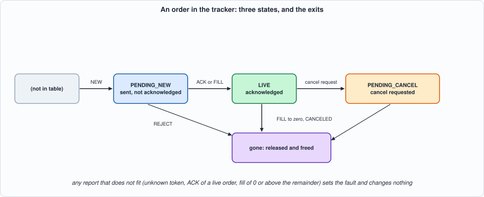
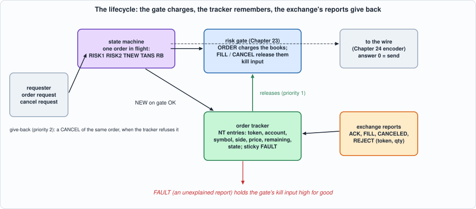
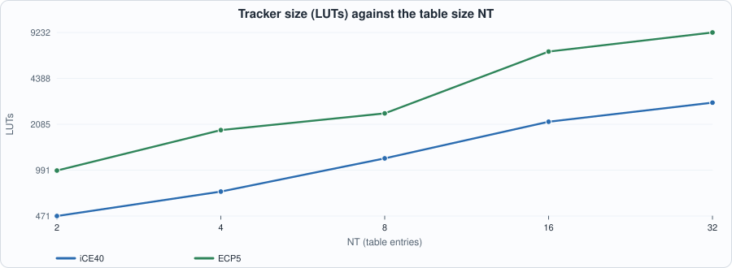
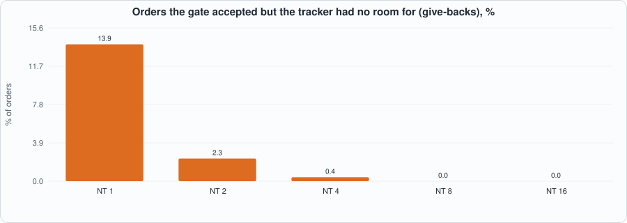

25. The Order Lifecycle: Tracking What Is Open, Giving Back What Is Not, and Keeping Two Books the Same¶
About the kestrels in this picture
- Seychelles kestrel (Falco araeus) is found on the granitic islands of the Seychelles. It is a small kestrel that hunts lizards and insects in forest and around villages.
- Common kestrel (Falco tinnunculus) ranges across Europe, Asia and Africa. It is famous for hovering: it faces the wind and holds its head almost still while its body adjusts, searching the ground below before it drops onto prey. A much-cited study reported that voles' scent trails reflect ultraviolet light, which kestrels may be able to see.
The scene is imaginary and the birds are stylised drawings.
What you will see: Chapter 23's gate charges an order when it goes out; nothing yet gives the charge back. This chapter builds the memory that does: an order tracker, a table of the orders that are open (token, account, symbol, side, the price the gate was charged, the quantity left, a state), and the rules by which the exchange's reports (acknowledged, filled, cancelled, rejected) turn into releases to the gate. Two ideas carry it. First, a release carries the order's own price, so the notional given back is exactly the notional that was charged. Second, a report the books cannot explain is not argued with: the tracker sets a sticky fault, which holds the gate's kill input high for good. The chapter then joins the gate and the tracker with a small state machine (the order is charged, recorded, and if the tracker has no room the charge is given back) and checks the property the design exists to keep: the gate's books and the tracker's books describe the same orders.
What you need to know first: Chapter 23 (the gate and its event format: FILL and CANCEL release what an order took), Chapter 24 (the order is sent only after the gate says OK) and Chapter 20 (a model in which time is part of the specification).
What this chapter builds: rtl/track.sv (track and track_syn), rtl/life.sv (life: gate + tracker + state machine, and life_syn), model/life_gold.py (the tracker's specification), model/sys_gold.py (the joined design's specification and the reconciliation check), tb/life_tb.sv, tb/sys_tb.sv, formal/track_props.sv, tools/ch25_run.py, tools/ch25_sys.py, tools/ch25_formal.py, tools/ch25_example_a.py, tools/ch25_example_b.py, tools/mut_ch25.py, tools/mut_ch25_sys.py, tools/make_figs_ch25.py. The risk gate (rtl/risk.sv) is Chapter 23's, unchanged.
The exchange's reports are the book's own
The four reports (ACK, FILL, CANCELED, REJECT) carry a token and a quantity, and nothing else. They are a simplification of what an exchange's execution reports say (no execution price, no execution id, no reason codes, no replace, no bust, no partial-cancel), and they are not any exchange's message set. A real feed must be mapped onto them, and a real exchange's own rules (what a fill of a cancel-pending order looks like, how a bust is reported) decide whether the tracker's anomaly rules are too strict.
Scope: what this chapter leaves out, on purpose
Replace and bust are out of scope (Exercises 1 and 2). One order is in flight at a time between the gate and the tracker: the joined design takes an order every 5 to 6 cycles, not every cycle (the gate alone takes one per cycle); reports, releases and cancel requests are never held up by it. Tokens are 32 bits; an order is identified by its token alone (no per-session namespace). The formal proof is bounded (8 cycles, tokens 0 to 3, two table entries, quantities below 8). The timing numbers are for a placed model of the design, not a build.
The specification¶
model/life_gold.py states the tracker in its docstring and in a small executable class; model/sys_gold.py states the joined design. In words:
- The table.
NTentries. An order is in the table from the moment the requester records it (NEW) until it is finished. A finished order leaves, so a later report for its token is a report for an unknown token. - Local events (from the requester), refused without a fault:
NEWis refused with ZERO (quantity 0), DUPTOK (the token is open) or FULL (no free entry; the order must then not be sent);CANCELREQis refused with UNKNOWN, or BADSTATE unless the order is LIVE, and makes a LIVE order PENDING_CANCEL. - Reports (from the exchange):
ACKonly makes sense for a PENDING_NEW order;FILL(qty)takesqtyfrom the remainder (0 is ZERO, above the remainder is OVERFILL), is an implicit acknowledgement, releases a FILL to the gate at the order's own price, and frees the entry at zero remaining;CANCELEDreleases the whole remainder as a CANCEL and frees the entry (in any state);REJECTis only for a PENDING_NEW order (otherwise BADSTATE) and releases the quantity as a CANCEL. Every report that is not OK changes nothing, releases nothing and sets the sticky FAULT. - Time. One event per cycle; a report wins over a local event offered in the same cycle (
readyis low and the requester holds its event). An event in cycle c is applied at its end; the answer, the release and the new live count are visible in cycle c + 1.

Figure 25.1: an order in the tracker.The joined design (life): an order request is offered to the gate at once; the gate answers two cycles later. A refusal ends the order (the answer is the gate's code, 1 to 10). On OK the tracker is offered NEW. If the tracker refuses (ZERO, DUPTOK, FULL), the gate has been charged for an order that will not exist, so the state machine sends the gate a CANCEL of the same account, symbol, side, price and quantity, and the answer is 16 plus the tracker's code. The answer to an order is d_res: 0 means the order may be sent, 1 to 10 are the gate's refusals, 16 to 22 the tracker's refusals (given back). The gate's event port has one user per cycle, in this priority: a release from the tracker, a give-back, a new order. And the tracker's fault is wired to the gate's kill input.

Figure 25.2: the lifecycle.Reconciliation, the property under test, is checked by the model in every cycle in which the design is quiet (no order in flight, nothing waiting in the tracker's output register or in the gate's pipeline): for every account and symbol, the gate's open buys (sells) equal the sum of the remaining quantities of the tracker's buy (sell) orders, and the gate's open notional of an account equals the sum of price × remaining quantity over the tracker's orders.
The hardware¶
- The table is registers, searched at once. Each entry's 32-bit token is compared with the event's token in parallel (
hit, and the entry's index); a priority loop finds a free entry. No RAM: the lookup is one cycle, which a RAM-based hash (Chapter 20) would not give without more machinery. - One decision per cycle (
always_comb): the result code, the release, and what to write. The writes (record a new order, make LIVE, make PENDING_CANCEL, reduce the remainder, free) are separate enables. - Answers are qualified by their valid. The answer fields are meaningful only when
o_validis high, the release fields only wheno_rvis high. (The first version cleared them when idle; the mutation run showed that no test could tell, so the clearing is gone.) - The join is a six-state machine (
IDLE RISK1 RISK2 TNEW TANS RB) around two instances. The gate's event port is a three-way multiplexer whose priorities are ingive_back = (st == RB) && !t_rv.
// Chapter 25: the order tracker. NT entries, each an order that was sent and is not finished: token, account, symbol, side, the order's price, the remaining quantity and a state (PENDING_NEW, LIVE, PENDING_CANCEL). The token is looked up in all entries at once. One event per cycle: a report from the exchange wins over a local event (ready is low and the requester holds its event). Every report that does not fit the books sets the sticky fault. Outputs are qualified by their valid: the answer fields by o_valid, the release fields by o_rv, and are otherwise don't-care. The specification is in model/life_gold.py.
module track #(parameter int NT = 4, parameter int PW = 16, parameter int QW = 16) (
input logic clk, input logic rst,
input logic l_valid, input logic l_kind, input logic [31:0] l_tok, input logic [3:0] l_acct, input logic [3:0] l_sym, input logic l_side, input logic [PW-1:0] l_px, input logic [QW-1:0] l_qty,
output logic ready,
input logic r_valid, input logic [1:0] r_kind, input logic [31:0] r_tok, input logic [QW-1:0] r_qty,
output logic o_valid, output logic o_src, output logic [2:0] o_res,
output logic o_rv, output logic [1:0] o_rtype, output logic [3:0] o_racct, output logic [3:0] o_rsym, output logic o_rside, output logic [PW-1:0] o_rpx, output logic [QW-1:0] o_rqty,
output logic [$clog2(NT+1)-1:0] o_live, output logic o_fault);
localparam logic [2:0] OK = 3'd0, UNKNOWN = 3'd1, BADSTATE = 3'd2, OVERFILL = 3'd3, ZERO = 3'd4, FULL = 3'd5, DUPTOK = 3'd6;
localparam logic [1:0] PNEW = 2'd0, LIVE = 2'd1, PCAN = 2'd2;
localparam logic [1:0] ACK = 2'd0, FILL = 2'd1, CANCELED = 2'd2; // REJECT is the remaining value 3 (the default branch)
localparam int IW = $clog2(NT) > 0 ? $clog2(NT) : 1;
logic used [0:NT-1]; logic [31:0] tok [0:NT-1]; logic [3:0] acct [0:NT-1]; logic [3:0] sym [0:NT-1]; logic side [0:NT-1];
logic [PW-1:0] px [0:NT-1]; logic [QW-1:0] rem [0:NT-1]; logic [1:0] st [0:NT-1];
logic fault;
assign ready = !r_valid;
wire [31:0] etok = r_valid ? r_tok : l_tok;
// ---- the lookup: every entry compares its token at once
logic hit; logic [IW-1:0] hi; logic free; logic [IW-1:0] fi;
always_comb begin
hit = 1'b0; hi = '0; free = 1'b0; fi = '0;
for (int i = NT - 1; i >= 0; i--) begin
if (used[i] && tok[i] == etok) begin hit = 1'b1; hi = IW'(i); end
if (!used[i]) begin free = 1'b1; fi = IW'(i); end
end
end
wire [QW-1:0] hrem = rem[hi]; wire [1:0] hst = st[hi];
// ---- the decision of this cycle
logic [2:0] res; logic anomaly;
logic do_new, do_fill, do_free, do_pcan, do_live;
logic rel; logic [1:0] rtype; logic [QW-1:0] rq;
always_comb begin
res = OK; anomaly = 1'b0; do_new = 1'b0; do_fill = 1'b0; do_free = 1'b0; do_pcan = 1'b0; do_live = 1'b0; rel = 1'b0; rtype = 2'd0; rq = '0;
if (r_valid) begin
if (!hit) res = UNKNOWN;
else case (r_kind)
ACK: if (hst != PNEW) res = BADSTATE; else do_live = 1'b1;
FILL: begin
if (r_qty == '0) res = ZERO;
else if (r_qty > hrem) res = OVERFILL;
else begin do_fill = 1'b1; do_live = (hst == PNEW); rel = 1'b1; rtype = 2'd1; rq = r_qty; do_free = (r_qty == hrem); end
end
CANCELED: begin rel = 1'b1; rtype = 2'd2; rq = hrem; do_free = 1'b1; end
default: if (hst != PNEW) res = BADSTATE; else begin rel = 1'b1; rtype = 2'd2; rq = hrem; do_free = 1'b1; end
endcase
anomaly = (res != OK);
end else if (l_valid) begin
if (!l_kind) begin
if (l_qty == '0) res = ZERO; else if (hit) res = DUPTOK; else if (!free) res = FULL; else do_new = 1'b1;
end else begin
if (!hit) res = UNKNOWN; else if (hst != LIVE) res = BADSTATE; else do_pcan = 1'b1;
end
end
end
always_ff @(posedge clk) begin
if (rst) begin
for (int i = 0; i < NT; i++) begin used[i] <= 1'b0; tok[i] <= '0; acct[i] <= '0; sym[i] <= '0; side[i] <= 1'b0; px[i] <= '0; rem[i] <= '0; st[i] <= '0; end
fault <= 1'b0; o_valid <= 1'b0; o_src <= 1'b0; o_res <= '0; o_rv <= 1'b0; o_rtype <= '0; o_racct <= '0; o_rsym <= '0; o_rside <= 1'b0; o_rpx <= '0; o_rqty <= '0;
end else begin
o_valid <= r_valid || l_valid; o_src <= r_valid; o_res <= res;
o_rv <= rel; o_rtype <= rtype; o_racct <= acct[hi]; o_rsym <= sym[hi]; o_rside <= side[hi]; o_rpx <= px[hi]; o_rqty <= rq;
if (anomaly) fault <= 1'b1;
if (do_new) begin
used[fi] <= 1'b1; tok[fi] <= l_tok; acct[fi] <= l_acct; sym[fi] <= l_sym; side[fi] <= l_side; px[fi] <= l_px; rem[fi] <= l_qty; st[fi] <= PNEW;
end
if (do_pcan) st[hi] <= PCAN;
if (do_live) st[hi] <= LIVE;
if (do_fill) rem[hi] <= hrem - r_qty;
if (do_free) used[hi] <= 1'b0;
end
end
always_comb begin o_live = '0; for (int i = 0; i < NT; i++) o_live = o_live + (used[i] ? 1 : 0); end
assign o_fault = fault;
endmodule
// track_syn: the tracker behind a handful of pins, ONLY for the place-and-route runs.
module track_syn #(parameter int NT = 4, parameter int PW = 16, parameter int QW = 16) (input logic clk, input logic rst, input logic si, input logic sh, output logic [15:0] info);
localparam int LQ = 43 + PW, LR = LQ + QW, LT = LR + 3 + 32 + QW;
logic [LT-1:0] iv; logic ready, ov_, src, rv, rside, fault; logic [2:0] res; logic [1:0] rtype; logic [3:0] racct, rsym; logic [PW-1:0] rpx; logic [QW-1:0] rqty; logic [$clog2(NT+1)-1:0] live;
always_ff @(posedge clk) if (sh) iv <= {iv[LT-2:0], si};
track #(.NT(NT), .PW(PW), .QW(QW)) u (.clk(clk), .rst(rst), .l_valid(iv[0]), .l_kind(iv[1]), .l_tok(iv[33:2]), .l_acct(iv[37:34]), .l_sym(iv[41:38]), .l_side(iv[42]), .l_px(iv[LQ-1:43]), .l_qty(iv[LR-1:LQ]), .ready(ready),
.r_valid(iv[LR]), .r_kind(iv[LR+2:LR+1]), .r_tok(iv[LR+34:LR+3]), .r_qty(iv[LT-1:LR+35]),
.o_valid(ov_), .o_src(src), .o_res(res), .o_rv(rv), .o_rtype(rtype), .o_racct(racct), .o_rsym(rsym), .o_rside(rside), .o_rpx(rpx), .o_rqty(rqty), .o_live(live), .o_fault(fault));
logic [15:0] x, r1; always_comb x = 16'(rpx) ^ 16'(rqty) ^ {1'b0, racct, rsym, rtype, rside, rv, res} ^ 16'(live) ^ {12'd0, src, ov_, ready, fault};
always_ff @(posedge clk) begin r1 <= x; info <= r1; end
endmodule
// Chapter 25: the order lifecycle: the risk gate (Chapter 23) and the order tracker joined. An order request is offered to the gate; if the gate says OK it is recorded in the tracker (and may be sent: the answer says so); if the tracker cannot record it (table full, token already open, zero quantity) the gate's charge is given back at once with a CANCEL release. Fills, cancels and rejects reported by the exchange make the tracker release to the gate what is no longer open, with the price the gate was charged. A report the tracker cannot explain sets its fault, which holds the gate's kill input high for good (fail closed). The gate's event port has one user per cycle: a release from the tracker first, then a give-back, then a new order. One order is in flight at a time (a small state machine); reports and cancel requests are never held up by it. The specification is in model/life_gold.py (class Sys).
module life #(parameter int NT = 4, parameter int NA = 4, parameter int NS = 4, parameter int QW = 16, parameter int PW = 16, parameter int R = 4, parameter int TW = 8) (
input logic clk, input logic rst,
input logic ord_valid, input logic [31:0] ord_tok, input logic [3:0] ord_acct, input logic [3:0] ord_sym, input logic ord_side, input logic [PW-1:0] ord_px, input logic [QW-1:0] ord_qty,
output logic ord_ready,
input logic cr_valid, input logic [31:0] cr_tok, output logic cr_ready,
input logic r_valid, input logic [1:0] r_kind, input logic [31:0] r_tok, input logic [QW-1:0] r_qty,
input logic cfg_a_valid, input logic [3:0] cfg_a_idx, input logic [QW-1:0] cfg_maxlong, input logic [QW-1:0] cfg_maxshort, input logic [QW-1:0] cfg_maxqty, input logic [PW+QW-1:0] cfg_maxonot, input logic [PW+QW+1:0] cfg_maxnot, input logic [TW-1:0] cfg_cap,
input logic cfg_b_valid, input logic [3:0] cfg_b_idx, input logic [PW-1:0] cfg_lo, input logic [PW-1:0] cfg_hi,
input logic ctl_arm, input logic ctl_disarm, input logic ext_kill,
output logic d_valid, output logic [4:0] d_res, output logic [31:0] d_tok,
output logic c_valid, output logic [2:0] c_res,
output logic rk_valid, output logic [1:0] rk_kind, output logic [3:0] rk_res, output logic signed [QW+1:0] rk_pos, output logic [QW-1:0] rk_ob, output logic [QW-1:0] rk_os, output logic [PW+QW+1:0] rk_not, output logic [TW-1:0] rk_tok,
output logic [$clog2(NT+1)-1:0] t_live, output logic t_fault, output logic [2:0] st_o);
localparam logic [2:0] IDLE = 3'd0, RISK1 = 3'd1, RISK2 = 3'd2, TNEW = 3'd3, TANS = 3'd4, RB = 3'd5;
logic [2:0] st;
// the order in flight
logic [31:0] h_tok; logic [3:0] h_acct, h_sym; logic h_side; logic [PW-1:0] h_px; logic [QW-1:0] h_qty; logic [4:0] h_res;
// ---- the tracker
logic t_ready, t_ov, t_src, t_rv, t_rside, t_ofault; logic [2:0] t_res; logic [1:0] t_rtype; logic [3:0] t_racct, t_rsym; logic [PW-1:0] t_rpx; logic [QW-1:0] t_rqty;
wire tl_valid = (st == TNEW) ? 1'b1 : cr_valid;
track #(.NT(NT), .PW(PW), .QW(QW)) trk (.clk(clk), .rst(rst), .l_valid(tl_valid), .l_kind(st != TNEW), .l_tok(st == TNEW ? h_tok : cr_tok), .l_acct(h_acct), .l_sym(h_sym), .l_side(h_side), .l_px(h_px), .l_qty(h_qty), .ready(t_ready),
.r_valid(r_valid), .r_kind(r_kind), .r_tok(r_tok), .r_qty(r_qty), .o_valid(t_ov), .o_src(t_src), .o_res(t_res), .o_rv(t_rv), .o_rtype(t_rtype), .o_racct(t_racct), .o_rsym(t_rsym), .o_rside(t_rside), .o_rpx(t_rpx), .o_rqty(t_rqty), .o_live(t_live), .o_fault(t_ofault));
assign t_fault = t_ofault; assign st_o = st;
assign cr_ready = (st != TNEW) && t_ready;
wire cr_acc = cr_valid && cr_ready;
assign c_valid = t_ov && !t_src && (st != TANS); assign c_res = t_res;
// ---- the gate's event port
wire give_back = (st == RB) && !t_rv;
wire take_order = (st == IDLE) && ord_valid && !t_rv;
assign ord_ready = (st == IDLE) && !t_rv;
logic ev_valid; logic [1:0] ev_type; logic [3:0] ev_acct, ev_sym; logic ev_side; logic [PW-1:0] ev_px; logic [QW-1:0] ev_qty;
always_comb begin
ev_valid = 1'b1; ev_type = 2'd0; ev_acct = ord_acct; ev_sym = ord_sym; ev_side = ord_side; ev_px = ord_px; ev_qty = ord_qty;
if (t_rv) begin ev_type = t_rtype; ev_acct = t_racct; ev_sym = t_rsym; ev_side = t_rside; ev_px = t_rpx; ev_qty = t_rqty; end
else if (give_back) begin ev_type = 2'd2; ev_acct = h_acct; ev_sym = h_sym; ev_side = h_side; ev_px = h_px; ev_qty = h_qty; end
else ev_valid = take_order;
end
risk #(.NA(NA), .NS(NS), .QW(QW), .PW(PW), .R(R), .TW(TW)) gate (.clk(clk), .rst(rst), .ev_valid(ev_valid), .ev_type(ev_type), .ev_acct(ev_acct), .ev_sym(ev_sym), .ev_side(ev_side), .ev_px(ev_px), .ev_qty(ev_qty),
.cfg_a_valid(cfg_a_valid), .cfg_a_idx(cfg_a_idx), .cfg_maxlong(cfg_maxlong), .cfg_maxshort(cfg_maxshort), .cfg_maxqty(cfg_maxqty), .cfg_maxonot(cfg_maxonot), .cfg_maxnot(cfg_maxnot), .cfg_cap(cfg_cap),
.cfg_b_valid(cfg_b_valid), .cfg_b_idx(cfg_b_idx), .cfg_lo(cfg_lo), .cfg_hi(cfg_hi), .ctl_arm(ctl_arm), .ctl_disarm(ctl_disarm), .kill(ext_kill || t_ofault),
.o_valid(rk_valid), .o_kind(rk_kind), .o_res(rk_res), .o_pos(rk_pos), .o_ob(rk_ob), .o_os(rk_os), .o_not(rk_not), .o_tok(rk_tok));
// ---- the state machine of the order in flight
always_ff @(posedge clk) begin
if (rst) begin st <= IDLE; d_valid <= 1'b0; d_res <= '0; d_tok <= '0; h_tok <= '0; h_acct <= '0; h_sym <= '0; h_side <= 1'b0; h_px <= '0; h_qty <= '0; h_res <= '0; end
else begin
d_valid <= 1'b0;
case (st)
IDLE: if (take_order) begin st <= RISK1; h_tok <= ord_tok; h_acct <= ord_acct; h_sym <= ord_sym; h_side <= ord_side; h_px <= ord_px; h_qty <= ord_qty; end
RISK1: st <= RISK2;
RISK2: begin // the gate's answer to the order
if (rk_res != 4'd0) begin d_valid <= 1'b1; d_res <= {1'b0, rk_res}; d_tok <= h_tok; st <= IDLE; end
else st <= TNEW;
end
TNEW: if (t_ready) st <= TANS; // the tracker takes the order unless a report wins the cycle
TANS: begin
if (t_res == 3'd0) begin d_valid <= 1'b1; d_res <= 5'd0; d_tok <= h_tok; st <= IDLE; end
else begin h_res <= {2'b10, t_res}; st <= RB; end
end
RB: if (!t_rv) begin d_valid <= 1'b1; d_res <= h_res; d_tok <= h_tok; st <= IDLE; end
default: st <= IDLE;
endcase
end
end
wire unused = &{1'b0, cr_acc, t_ov, rk_valid};
endmodule
// life_syn: the same design behind a handful of pins, ONLY for the place-and-route runs.
module life_syn #(parameter int NT = 4, parameter int NA = 4, parameter int NS = 4) (input logic clk, input logic rst, input logic si, input logic sh, output logic [15:0] info);
logic [324:0] iv; logic ordr, crr, dv, cv, rkv, tf; logic [4:0] dr; logic [31:0] dt; logic [2:0] cr_; logic [1:0] rkk; logic [3:0] rkr; logic signed [17:0] pos; logic [15:0] ob, os; logic [33:0] nt_; logic [7:0] tk; logic [$clog2(NT+1)-1:0] live; logic [2:0] so;
always_ff @(posedge clk) if (sh) iv <= {iv[323:0], si};
life #(.NT(NT), .NA(NA), .NS(NS)) u (.clk(clk), .rst(rst), .ord_valid(iv[0]), .ord_tok(iv[32:1]), .ord_acct(iv[36:33]), .ord_sym(iv[40:37]), .ord_side(iv[41]), .ord_px(iv[57:42]), .ord_qty(iv[73:58]), .ord_ready(ordr),
.cr_valid(iv[74]), .cr_tok(iv[106:75]), .cr_ready(crr), .r_valid(iv[107]), .r_kind(iv[109:108]), .r_tok(iv[141:110]), .r_qty(iv[157:142]),
.cfg_a_valid(iv[158]), .cfg_a_idx(iv[162:159]), .cfg_maxlong(iv[178:163]), .cfg_maxshort(iv[194:179]), .cfg_maxqty(iv[210:195]), .cfg_maxonot(iv[242:211]), .cfg_maxnot(iv[276:243]), .cfg_cap(iv[284:277]),
.cfg_b_valid(iv[285]), .cfg_b_idx(iv[289:286]), .cfg_lo(iv[305:290]), .cfg_hi(iv[321:306]), .ctl_arm(iv[322]), .ctl_disarm(iv[323]), .ext_kill(iv[324]),
.d_valid(dv), .d_res(dr), .d_tok(dt), .c_valid(cv), .c_res(cr_), .rk_valid(rkv), .rk_kind(rkk), .rk_res(rkr), .rk_pos(pos), .rk_ob(ob), .rk_os(os), .rk_not(nt_), .rk_tok(tk), .t_live(live), .t_fault(tf), .st_o(so));
logic [15:0] x, r1; always_comb x = 16'(dt) ^ 16'(dt >> 16) ^ {dr, cr_, rkk, rkr, ordr, crr} ^ pos[15:0] ^ {14'd0, pos[17:16]} ^ ob ^ os ^ 16'(nt_) ^ 16'(nt_ >> 16) ^ {8'd0, tk} ^ 16'(live) ^ {so, cv, rkv, tf, dv, 9'd0};
always_ff @(posedge clk) begin r1 <= x; info <= r1; end
endmodule
The tests¶
The tracker has its own testbench and sweep (tb/life_tb.sv, tools/ch25_run.py); the joined design has another (tb/sys_tb.sv, tools/ch25_sys.py) that prints, every cycle, the answer to each order and each cancel request, the gate's answer to every event it gets (so every release the tracker makes is checked, with its account, symbol, side, price and quantity, by the effect on the gate's books), the live count, the fault and the state.
// Chapter 25 testbench for track: line k of out/life_stim.hex (32 hex digits) is everything on the pins in cycle k, cycle 0 being the first cycle after reset: the local event of the requester (held on the pins until accepted: model/life_gold.py run() decides which cycle) bits 0..74, the exchange's report bits 75..125. Before every clock edge it prints
// C <cycle> <ready> <answer valid> <source> <result> <release valid> <type> <account> <symbol> <side> <price> <quantity> <live> <fault> (zeros where nothing is valid)
`timescale 1ns/1ps
`ifndef NC
`define NC 1000
`endif
`ifndef NT
`define NT 4
`endif
module life_tb;
localparam int NC = `NC, NT = `NT;
logic clk = 0, rst = 1; logic [127:0] vec [0:NC-1]; int k, cyc = 0; logic run = 0;
logic l_valid = 0, l_kind = 0, l_side = 0, r_valid = 0; logic [31:0] l_tok = '0, r_tok = '0; logic [3:0] l_acct = '0, l_sym = '0; logic [15:0] l_px = '0, l_qty = '0, r_qty = '0; logic [1:0] r_kind = '0;
logic ready, o_valid, o_src, o_rv, o_rside, o_fault; logic [2:0] o_res; logic [1:0] o_rtype; logic [3:0] o_racct, o_rsym; logic [15:0] o_rpx, o_rqty; logic [$clog2(NT+1)-1:0] o_live;
track #(.NT(NT), .PW(16), .QW(16)) dut (.clk(clk), .rst(rst), .l_valid(l_valid), .l_kind(l_kind), .l_tok(l_tok), .l_acct(l_acct), .l_sym(l_sym), .l_side(l_side), .l_px(l_px), .l_qty(l_qty), .ready(ready),
.r_valid(r_valid), .r_kind(r_kind), .r_tok(r_tok), .r_qty(r_qty), .o_valid(o_valid), .o_src(o_src), .o_res(o_res), .o_rv(o_rv), .o_rtype(o_rtype), .o_racct(o_racct), .o_rsym(o_rsym), .o_rside(o_rside), .o_rpx(o_rpx), .o_rqty(o_rqty), .o_live(o_live), .o_fault(o_fault));
always #4 clk = ~clk;
`ifdef GARBAGE
initial begin // Icarus only: every register powers up with garbage, so that a reset that forgets one is seen
for (int i = 0; i < NT; i++) begin dut.used[i] = 1'b1; dut.tok[i] = 32'hDEADBEEF; dut.acct[i] = 4'd9; dut.sym[i] = 4'd9; dut.side[i] = 1'b1; dut.px[i] = 16'h5555; dut.rem[i] = 16'h7777; dut.st[i] = 2'd2; end
dut.fault = 1'b1; dut.o_valid = 1'b1; dut.o_src = 1'b1; dut.o_res = 3'd5; dut.o_rv = 1'b1; dut.o_rtype = 2'd3; dut.o_racct = 4'd7; dut.o_rsym = 4'd7; dut.o_rside = 1'b1; dut.o_rpx = 16'h1234; dut.o_rqty = 16'h4321;
end
`endif
always @(posedge clk) if (run) begin
$display("C %0d %0d %0d %0d %0d %0d %0d %0d %0d %0d %0d %0d %0d %0d", cyc, ready, o_valid, o_valid ? o_src : 1'b0, o_valid ? o_res : 3'd0, o_rv, o_rv ? o_rtype : 2'd0, o_rv ? o_racct : 4'd0, o_rv ? o_rsym : 4'd0, o_rv ? o_rside : 1'b0, o_rv ? o_rpx : 16'd0, o_rv ? o_rqty : 16'd0, o_live, o_fault);
cyc++;
end
initial begin
$readmemh("out/life_stim.hex", vec);
repeat (3) @(negedge clk); rst = 0;
for (k = 0; k < NC; k++) begin
l_valid = vec[k][0]; l_kind = vec[k][1]; l_tok = vec[k][33:2]; l_acct = vec[k][37:34]; l_sym = vec[k][41:38]; l_side = vec[k][42]; l_px = vec[k][58:43]; l_qty = vec[k][74:59];
r_valid = vec[k][75]; r_kind = vec[k][77:76]; r_tok = vec[k][109:78]; r_qty = vec[k][125:110];
run = 1; @(negedge clk);
end
l_valid = 0; r_valid = 0; repeat (4) @(negedge clk); $finish;
end
endmodule
#!/usr/bin/env python3
"""Chapter 25: the running designs. (1) lint; (2) the model's hand-checked scenarios and the statistics of the stimulus; (3) the tracker against the model in every cycle (ready, answer, release, live count, fault), in two simulators, for four table sizes, on scenarios: clean traffic, a table that is always full, token near-misses (tokens that differ in one bit), reports every cycle (the requester starves), fault injection (each kind of anomalous report), and random mixes."""
import os, random, subprocess, sys
from collections import Counter
sys.path.insert(0, os.path.dirname(os.path.abspath(__file__))); sys.path.insert(0, os.path.join(os.path.dirname(os.path.abspath(__file__)), "..", "model"))
import flow, life_gold as G
R_ = flow.ROOT; F_ = ["rtl/track.sv", "tb/life_tb.sv"]
def rows_rtl(res, nt, simu="icarus", rtl=F_):
n = G.write_stim(os.path.join(R_, "out", "life_stim.hex"), res)
o = (flow.sim_icarus if simu == "icarus" else flow.sim_verilator)(rtl, "life_tb", defines=(f"NC={n}", f"NT={nt}") + (("GARBAGE",) if simu == "icarus" else ()))[1]
try: return [tuple(int(x) for x in l.split()[2:]) for l in o.splitlines() if l.startswith("C ")]
except ValueError: return [("x",)]
def same(cy, nt, simu="icarus", rtl=F_):
res = G.run(cy, nt); got = rows_rtl(res, nt, simu, rtl); exp = G.expected_rows(res)
return got[:len(exp)] == exp and len(got) >= len(exp)
CONFIGS = [1, 2, 4, 5, 8]
def gen(kind, rng, nt, n=300):
"""Cycle list built by stepping a shadow tracker with the same rules as G.run, so that reports are (mostly) well formed."""
T = G.Tracker(nt); cy = []; held = None; pool = [rng.getrandbits(32) for _ in range(max(3, nt))]
pool += [pool[0] ^ (1 << rng.randrange(32)) for _ in range(3)] + [pool[1] ^ 0x80000000, pool[0] & 0xFFFF]
prate = {"clean": .5, "full": .8, "near": .5, "burst": .3, "fault": .5, "random": .5}[kind]
rrate = {"clean": .35, "full": .1, "near": .35, "burst": 1.0, "fault": .35, "random": .4}[kind]
for c in range(n):
d = {}
if held is None and rng.random() < prate:
if rng.random() < .65 or not T.nlive():
qty = rng.choice([0, 1, 1, 2, 5, 10, 100, 65535]) if rng.random() < .9 or kind == "random" else rng.randint(1, 65535)
if kind != "random" and rng.random() < .93: qty = max(qty, 1)
held = (G.NEW, dict(tok=rng.choice(pool), acct=rng.randrange(16), sym=rng.randrange(16), side=rng.randrange(2), px=rng.choice([0, 1, 1000, rng.randrange(65536), 65535]), qty=qty))
else:
live = [x["tok"] for x in T.e if x]; held = (G.CANCELREQ, dict(tok=rng.choice(live) if rng.random() < .8 else rng.choice(pool)))
d["loc"] = held
rep = None
if rng.random() < rrate:
live = [x for x in T.e if x]
if live and rng.random() < (.97 if kind in ("clean", "full", "near", "burst") else .8):
x = rng.choice(live); k = rng.choice([G.FILL, G.FILL, G.FILL, G.ACK, G.CANCELED, G.REJECT]) if x["st"] == G.PNEW else rng.choice([G.FILL, G.FILL, G.FILL, G.CANCELED])
if kind in ("clean", "full", "near", "burst") and x["st"] != G.PNEW and k == G.ACK: k = G.FILL
q = rng.choice([x["rem"], x["rem"], 1, rng.randint(1, x["rem"])]) if x["rem"] else 1
rep = (k, dict(tok=x["tok"], qty=q))
elif kind in ("fault", "random"):
live = [x for x in T.e if x]
if live and rng.random() < .6:
x = rng.choice(live); w = rng.choice(["over", "zero", "ack", "rej"]) if x["rem"] < 65535 else "zero"
rep = (G.FILL, dict(tok=x["tok"], qty=x["rem"] + 1)) if w == "over" else (G.FILL, dict(tok=x["tok"], qty=0)) if w == "zero" else (G.ACK, dict(tok=x["tok"])) if (w == "ack" and x["st"] != G.PNEW) else (G.REJECT, dict(tok=x["tok"])) if x["st"] != G.PNEW else (G.FILL, dict(tok=x["tok"], qty=x["rem"] + 1))
else: rep = (rng.choice([G.ACK, G.FILL, G.CANCELED, G.REJECT]), dict(tok=rng.choice(pool + [rng.getrandbits(32)]), qty=rng.randint(0, 5)))
if rep: d["rep"] = rep
cy.append(d)
if rep: T.report(*rep)
elif held is not None: T.local(*held); held = None
if kind == "fault" and T.fault and rng.random() < .05: pass
return cy
KINDS = ("clean", "full", "near", "burst", "fault", "random")
def make(kind, seed, nt): return gen(kind, random.Random(seed * 1000 + sum(map(ord, kind))), nt)
def battery():
"""The mutation runs' test: five table sizes, six scenarios, Icarus. -> None or the first difference."""
for nt in CONFIGS:
for kind in KINDS:
try: ok = same(make(kind, nt, nt), nt)
except Exception as x: return f"crash {type(x).__name__}"
if not ok: return f"{kind}, NT {nt}"
return None
def battery_model():
q = subprocess.run([sys.executable, "model/life_gold.py"], cwd=R_, capture_output=True, text=True, timeout=300)
return None if q.returncode == 0 else "hand-checked scenarios"
if __name__ == "__main__":
if "--battery-model" in sys.argv: print("RESULT", battery_model()); sys.exit(0)
if "--battery" in sys.argv: print("RESULT", battery()); sys.exit(0)
print("== 1. lint gate (Verilator -Wall --lint-only, Yosys 'check')")
p = subprocess.run(["verilator", "--lint-only", "-Wall", "--top-module", "track", "rtl/track.sv"], cwd=R_, capture_output=True, text=True); w_ = [l for l in (p.stdout + p.stderr).splitlines() if l.startswith("%Warning") and "DECLFILENAME" not in l]
y = subprocess.run(["yosys", "-p", "read_verilog -sv rtl/track.sv; hierarchy -top track; proc; opt_clean; check"], cwd=R_, capture_output=True, text=True).stdout
print(f" track: Verilator warnings {len(w_)}, Yosys check problems {len([l for l in y.splitlines() if 'Found and reported' in l and ' 0 problems' not in l])}")
print("\n== 2. the model's hand-checked scenarios (python3 model/life_gold.py) and what the stimulus contains (NT 4, seed 1)")
print(" " + subprocess.run([sys.executable, "model/life_gold.py"], cwd=R_, capture_output=True, text=True).stdout.strip())
for kind in KINDS:
res = G.run(make(kind, 1, 4), 4); an = Counter(G.RN[r[3]] for r in res["rows"] if r[1]); rl = Counter(r[5] for r in res["rows"] if r[4])
print(f" {kind:7s} answers: " + ", ".join(f"{k} {n}" for k, n in sorted(an.items())) + f" | releases: FILL {rl[1]}, CANCEL {rl[2]} | live max {max(r[11] for r in res['rows'])} | fault {res['rows'][-1][12]}")
print("\n== 3. the tracker against the model: ready, answer, release, live count and fault in every cycle")
print(f" {'scenario':8s} {'NT':>3s} | {'cycles':>7s} {'answers':>8s} {'releases':>9s} | {'Icarus':>7s} {'Verilator':>10s}")
for kind in KINDS:
for nt in CONFIGS:
cy = make(kind, 1, nt); res = G.run(cy, nt); i = same(cy, nt); v = same(cy, nt, "verilator")
print(f" {kind:8s} {nt:3d} | {len(res['rows']):7d} {sum(r[1] for r in res['rows']):8d} {sum(r[4] for r in res['rows']):9d} | {'PASS' if i else 'FAIL':>7s} {'PASS' if v else 'FAIL':>10s}")
To run: python3 tools/ch25_run.py (several minutes). Recorded output:
== 1. lint gate (Verilator -Wall --lint-only, Yosys 'check')
track: Verilator warnings 0, Yosys check problems 0
== 2. the model's hand-checked scenarios (python3 model/life_gold.py) and what the stimulus contains (NT 4, seed 1)
selftest True True
clean answers: BADSTATE 15, DUPTOK 15, FULL 14, OK 142, UNKNOWN 15, ZERO 2 | releases: FILL 43, CANCEL 22 | live max 4 | fault 0
full answers: BADSTATE 59, DUPTOK 47, FULL 73, OK 63, UNKNOWN 11, ZERO 1 | releases: FILL 21, CANCEL 9 | live max 4 | fault 0
near answers: BADSTATE 24, DUPTOK 17, FULL 2, OK 155, UNKNOWN 9, ZERO 1 | releases: FILL 44, CANCEL 32 | live max 4 | fault 0
burst answers: OK 163, UNKNOWN 7, ZERO 1 | releases: FILL 52, CANCEL 28 | live max 2 | fault 0
fault answers: BADSTATE 25, DUPTOK 22, FULL 8, OK 127, OVERFILL 8, UNKNOWN 39, ZERO 4 | releases: FILL 35, CANCEL 27 | live max 4 | fault 1
random answers: BADSTATE 16, DUPTOK 17, FULL 2, OK 111, OVERFILL 12, UNKNOWN 36, ZERO 17 | releases: FILL 30, CANCEL 23 | live max 4 | fault 1
== 3. the tracker against the model: ready, answer, release, live count and fault in every cycle
scenario NT | cycles answers releases | Icarus Verilator
clean 1 | 303 194 64 | PASS PASS
clean 2 | 303 205 69 | PASS PASS
clean 4 | 303 203 65 | PASS PASS
clean 5 | 303 219 79 | PASS PASS
clean 8 | 303 212 76 | PASS PASS
full 1 | 303 255 28 | PASS PASS
full 2 | 303 257 33 | PASS PASS
full 4 | 303 254 30 | PASS PASS
full 5 | 303 261 25 | PASS PASS
full 8 | 303 248 18 | PASS PASS
near 1 | 303 192 54 | PASS PASS
near 2 | 303 202 71 | PASS PASS
near 4 | 303 208 76 | PASS PASS
near 5 | 303 218 79 | PASS PASS
near 8 | 303 212 74 | PASS PASS
burst 1 | 303 183 83 | PASS PASS
burst 2 | 303 183 83 | PASS PASS
burst 4 | 303 171 80 | PASS PASS
burst 5 | 303 174 86 | PASS PASS
burst 8 | 303 203 97 | PASS PASS
fault 1 | 303 219 48 | PASS PASS
fault 2 | 303 223 56 | PASS PASS
fault 4 | 303 233 62 | PASS PASS
fault 5 | 303 228 67 | PASS PASS
fault 8 | 303 222 67 | PASS PASS
random 1 | 303 215 47 | PASS PASS
random 2 | 303 224 58 | PASS PASS
random 4 | 303 211 53 | PASS PASS
random 5 | 303 211 56 | PASS PASS
random 8 | 303 234 61 | PASS PASS
// Chapter 25 testbench for life (the gate and the tracker joined): line k of out/sys_stim.hex (82 hex digits, layout in model/sys_gold.py write_stim) is everything on the pins in cycle k, cycle 0 being the first cycle after reset. Before every clock edge it prints
// C <cycle> <ord_ready> <cr_ready> <d_valid> <d_res> <d_tok> <c_valid> <c_res> <rk_valid> <kind> <res> <pos> <ob> <os> <not> <tok> <live> <fault> <state> (zeros where the qualifying valid is low; pos signed)
`timescale 1ns/1ps
`ifndef NC
`define NC 1000
`endif
`ifndef NT
`define NT 4
`endif
`ifndef R
`define R 4
`endif
module sys_tb;
localparam int NC = `NC, NT = `NT;
logic clk = 0, rst = 1; logic [327:0] vec [0:NC-1]; int k, cyc = 0; logic run = 0;
logic ord_valid = 0, ord_side = 0, cr_valid = 0, r_valid = 0, cfg_a_valid = 0, cfg_b_valid = 0, ctl_arm = 0, ctl_disarm = 0, ext_kill = 0;
logic [31:0] ord_tok = '0, cr_tok = '0, r_tok = '0; logic [3:0] ord_acct = '0, ord_sym = '0, cfg_a_idx = '0, cfg_b_idx = '0; logic [15:0] ord_px = '0, ord_qty = '0, r_qty = '0, cfg_maxlong = '0, cfg_maxshort = '0, cfg_maxqty = '0, cfg_lo = '0, cfg_hi = '0;
logic [1:0] r_kind = '0; logic [31:0] cfg_maxonot = '0; logic [33:0] cfg_maxnot = '0; logic [7:0] cfg_cap = '0;
logic ord_ready, cr_ready, d_valid, c_valid, rk_valid, t_fault; logic [4:0] d_res; logic [31:0] d_tok; logic [2:0] c_res, st_o; logic [1:0] rk_kind; logic [3:0] rk_res; logic signed [17:0] rk_pos; logic [15:0] rk_ob, rk_os; logic [33:0] rk_not; logic [7:0] rk_tok; logic [$clog2(NT+1)-1:0] t_live;
life #(.NT(NT), .NA(4), .NS(4), .QW(16), .PW(16), .R(`R), .TW(8)) dut (.clk(clk), .rst(rst), .ord_valid(ord_valid), .ord_tok(ord_tok), .ord_acct(ord_acct), .ord_sym(ord_sym), .ord_side(ord_side), .ord_px(ord_px), .ord_qty(ord_qty), .ord_ready(ord_ready),
.cr_valid(cr_valid), .cr_tok(cr_tok), .cr_ready(cr_ready), .r_valid(r_valid), .r_kind(r_kind), .r_tok(r_tok), .r_qty(r_qty),
.cfg_a_valid(cfg_a_valid), .cfg_a_idx(cfg_a_idx), .cfg_maxlong(cfg_maxlong), .cfg_maxshort(cfg_maxshort), .cfg_maxqty(cfg_maxqty), .cfg_maxonot(cfg_maxonot), .cfg_maxnot(cfg_maxnot), .cfg_cap(cfg_cap),
.cfg_b_valid(cfg_b_valid), .cfg_b_idx(cfg_b_idx), .cfg_lo(cfg_lo), .cfg_hi(cfg_hi), .ctl_arm(ctl_arm), .ctl_disarm(ctl_disarm), .ext_kill(ext_kill),
.d_valid(d_valid), .d_res(d_res), .d_tok(d_tok), .c_valid(c_valid), .c_res(c_res), .rk_valid(rk_valid), .rk_kind(rk_kind), .rk_res(rk_res), .rk_pos(rk_pos), .rk_ob(rk_ob), .rk_os(rk_os), .rk_not(rk_not), .rk_tok(rk_tok), .t_live(t_live), .t_fault(t_fault), .st_o(st_o));
always #4 clk = ~clk;
`ifdef GARBAGE
initial begin // Icarus only: the registers that reset must clear power up with garbage
dut.st = 3'd4; dut.d_valid = 1'b1; dut.d_res = 5'd9; dut.d_tok = 32'hABCD; dut.h_tok = 32'h1234; dut.h_acct = 4'd3; dut.h_sym = 4'd3; dut.h_side = 1'b1; dut.h_px = 16'h4321; dut.h_qty = 16'h1111; dut.h_res = 5'd7;
for (int i = 0; i < NT; i++) begin dut.trk.used[i] = 1'b1; dut.trk.tok[i] = 32'hDEADBEEF; dut.trk.rem[i] = 16'h7777; dut.trk.st[i] = 2'd2; end
dut.trk.fault = 1'b1; dut.trk.o_valid = 1'b1; dut.trk.o_rv = 1'b1; dut.trk.o_res = 3'd5;
dut.gate.armed = 1'b1; dut.gate.fault = 1'b1; dut.gate.s1_v = 1'b1; dut.gate.o_valid = 1'b1; dut.gate.phase = 2'd3;
for (int i = 0; i < 4; i++) begin dut.gate.notl[i] = 34'h12345; dut.gate.tok[i] = 8'd9; for (int j = 0; j < 4; j++) begin dut.gate.pos[i][j] = 18'd77; dut.gate.ob[i][j] = 16'd88; dut.gate.os[i][j] = 16'd99; end end
end
`endif
always @(posedge clk) if (run) begin
$display("C %0d %0d %0d %0d %0d %0d %0d %0d %0d %0d %0d %0d %0d %0d %0d %0d %0d %0d %0d", cyc, ord_ready, cr_ready, d_valid, d_valid ? d_res : 5'd0, d_valid ? d_tok : 32'd0, c_valid, c_valid ? c_res : 3'd0, rk_valid, rk_valid ? rk_kind : 2'd0, rk_valid ? rk_res : 4'd0,
rk_valid ? rk_pos : 18'sd0, rk_valid ? rk_ob : 16'd0, rk_valid ? rk_os : 16'd0, rk_valid ? rk_not : 34'd0, rk_valid ? rk_tok : 8'd0, t_live, t_fault, st_o);
cyc++;
end
initial begin
$readmemh("out/sys_stim.hex", vec);
repeat (3) @(negedge clk); rst = 0;
for (k = 0; k < NC; k++) begin
ord_valid = vec[k][0]; ord_tok = vec[k][32:1]; ord_acct = vec[k][36:33]; ord_sym = vec[k][40:37]; ord_side = vec[k][41]; ord_px = vec[k][57:42]; ord_qty = vec[k][73:58];
cr_valid = vec[k][74]; cr_tok = vec[k][106:75]; r_valid = vec[k][107]; r_kind = vec[k][109:108]; r_tok = vec[k][141:110]; r_qty = vec[k][157:142];
cfg_a_valid = vec[k][158]; cfg_a_idx = vec[k][162:159]; cfg_maxlong = vec[k][178:163]; cfg_maxshort = vec[k][194:179]; cfg_maxqty = vec[k][210:195]; cfg_maxonot = vec[k][242:211]; cfg_maxnot = vec[k][276:243]; cfg_cap = vec[k][284:277];
cfg_b_valid = vec[k][285]; cfg_b_idx = vec[k][289:286]; cfg_lo = vec[k][305:290]; cfg_hi = vec[k][321:306]; ctl_arm = vec[k][322]; ctl_disarm = vec[k][323]; ext_kill = vec[k][324];
run = 1; @(negedge clk);
end
ord_valid = 0; cr_valid = 0; r_valid = 0; cfg_a_valid = 0; cfg_b_valid = 0; ctl_arm = 0; ctl_disarm = 0; ext_kill = 0; repeat (4) @(negedge clk); $finish;
end
endmodule
#!/usr/bin/env python3
"""Chapter 25: the joined design (rtl/life.sv = gate + tracker + state machine) against its cycle model (model/sys_gold.py): every cycle, ready, the answer of each order, the answer of each cancel request, the gate's answer to every event it gets (so every release the tracker makes is checked, with account, symbol, side, price and quantity, by the effect on the gate's books), the count of live orders, the fault and the state; in two simulators, for three table sizes, on six traffic mixes; and the reconciliation check of the model (gate books = tracker books) in every quiet cycle."""
import os, random, subprocess, sys
from collections import Counter
sys.path.insert(0, os.path.dirname(os.path.abspath(__file__))); sys.path.insert(0, os.path.join(os.path.dirname(os.path.abspath(__file__)), "..", "model"))
import flow, life_gold as LG, risk_gold as RG, sys_gold as SG
R_ = flow.ROOT; F_ = ["rtl/risk.sv", "rtl/track.sv", "rtl/life.sv", "tb/sys_tb.sv"]
def rows_rtl(res, nt, simu="icarus", rtl=F_):
n = SG.write_stim(os.path.join(R_, "out", "sys_stim.hex"), res)
o = (flow.sim_icarus if simu == "icarus" else flow.sim_verilator)(rtl, "sys_tb", defines=(f"NC={n}", f"NT={nt}") + (("GARBAGE",) if simu == "icarus" else ()))[1]
try: return [tuple(int(x) for x in l.split()[2:]) for l in o.splitlines() if l.startswith("C ")]
except ValueError: return [("x",)]
def same(cy, nt, simu="icarus", rtl=F_):
res = SG.run(cy, nt); got = rows_rtl(res, nt, simu, rtl); exp = SG.expected_rows(res)
return got[:len(exp)] == exp and len(got) >= len(exp) and res["sys"].bad == 0
CONFIGS = [1, 2, 4]
def rcfg(rng, kind):
if kind == "tight": return dict(maxlong=rng.randint(10, 60), maxshort=rng.randint(10, 60), maxqty=rng.randint(5, 30), maxonot=rng.randint(200, 1500), maxnot=rng.randint(500, 3000), cap=rng.randint(1, 4))
return dict(maxlong=rng.randint(200, 2000), maxshort=rng.randint(200, 2000), maxqty=rng.randint(30, 200), maxonot=rng.randint(3000, 20000), maxnot=rng.randint(20000, 100000), cap=rng.randint(4, 8))
def gen(kind, rng, nt, n=400):
S = SG.Sys(nt); cy = []; ntok = [100]
def put(d):
cy.append(d); S.step(d)
for a in range(4): put(dict(cfg=(a, rcfg(rng, kind))))
for s in range(4): put(dict(band=(s, rng.randint(1, 30), rng.randint(70, 100))))
put(dict(arm=1)); put({}); put({})
prate = {"flow": .25, "tight": .5, "dups": .4, "faults": .3, "cancels": .3, "random": .4}[kind]
for _ in range(n):
d = {}
if rng.random() < prate and len(S.ordq) < 2:
if kind in ("dups", "random") and rng.random() < .45: tok = rng.randrange(max(101, ntok[0] - 5), max(102, ntok[0] + 1)) # a token issued a moment ago: usually still open
else: ntok[0] += 1; tok = ntok[0]
d["ord"] = dict(tok=tok, acct=rng.randrange(4) if rng.random() < .99 else 4, sym=rng.randrange(4) if rng.random() < .99 else 5, side=rng.randrange(2), px=rng.choice([rng.randint(30, 70)] * 12 + [rng.randint(1, 100), 0, 101]), qty=rng.choice([rng.randint(1, 30)] * 12 + [0, 1, 250]) if kind != "tight" else rng.randint(1, 40))
live = [x for x in S.T.e if x]
if rng.random() < (.35 if kind != "faults" else .3) and live:
x = rng.choice(live)
k = rng.choice([LG.FILL, LG.FILL, LG.FILL, LG.ACK, LG.CANCELED, LG.REJECT]) if x["st"] == LG.PNEW else rng.choice([LG.FILL, LG.FILL, LG.FILL, LG.CANCELED])
if x["st"] != LG.PNEW and k == LG.ACK: k = LG.FILL
q = rng.choice([x["rem"], rng.randint(1, x["rem"]), 1])
if kind in ("faults", "random") and rng.random() < (.004 if kind == "faults" else .001): k, q = rng.choice([(LG.FILL, x["rem"] + 1), (LG.FILL, 0), (LG.ACK, 0), (LG.REJECT, 0)]) if x["st"] != LG.PNEW else (LG.FILL, x["rem"] + 1)
d["rep"] = (k, dict(tok=x["tok"], qty=q))
elif kind in ("faults", "random") and rng.random() < .0007: d["rep"] = (rng.randrange(4), dict(tok=rng.randrange(1, 130), qty=rng.randint(0, 5)))
if rng.random() < (.25 if kind == "cancels" else .06) and len(S.crq) < 1: d["cr"] = dict(tok=rng.choice([x["tok"] for x in live]) if live and rng.random() < .85 else rng.randrange(100, 130))
if rng.random() < .01: d["cfg"] = (rng.randrange(4), rcfg(rng, kind))
if rng.random() < .01: d["band"] = (rng.randrange(4), rng.randint(1, 30), rng.randint(70, 100))
if rng.random() < .08: d["arm"] = 1
if rng.random() < (.004 if kind != "faults" else .01): d["disarm"] = 1
if rng.random() < (.003 if kind == "faults" else .0005 if kind == "random" else .0): d["kill"] = 1
put(d)
return cy
KINDS = ("flow", "tight", "dups", "faults", "cancels", "random")
def make(kind, seed, nt): return gen(kind, random.Random(seed * 1000 + sum(map(ord, kind))), nt)
def collide(k):
"""directed: a rollback (duplicate token) waits for the gate's port while the report of a fill makes the tracker release: the release goes first. k delays the report."""
u = dict(maxlong=100, maxshort=100, maxqty=50, maxonot=10000, maxnot=100000, cap=5); o = lambda t: dict(tok=t, acct=0, sym=0, side=0, px=20, qty=10)
return [dict(cfg=(a, u)) for a in range(4)] + [dict(band=(s, 1, 100)) for s in range(4)] + [dict(arm=1), {}, {}, dict(ord=o(1)), {}, {}, {}, {}, {}, dict(ord=o(1))] + [{}] * k + [dict(rep=(LG.FILL, dict(tok=1, qty=4)))] + [{}] * 12
def battery():
"""The mutation runs' test: three table sizes, six mixes, Icarus. -> None or the first difference."""
for nt in CONFIGS:
for kind in KINDS:
try: ok = same(make(kind, nt, nt), nt)
except Exception as x: return f"crash {type(x).__name__}"
if not ok: return f"{kind}, NT {nt}"
for k in range(14):
if not same(collide(k), 2): return f"collision, delay {k}"
return None
def battery_model():
q = subprocess.run([sys.executable, "model/sys_gold.py"], cwd=R_, capture_output=True, text=True, timeout=300)
return None if q.returncode == 0 else "hand-checked scenarios"
if __name__ == "__main__":
if "--battery-model" in sys.argv: print("RESULT", battery_model()); sys.exit(0)
if "--battery" in sys.argv: print("RESULT", battery()); sys.exit(0)
print("== 1. lint gate (Verilator -Wall --lint-only, Yosys 'check')")
p = subprocess.run(["verilator", "--lint-only", "-Wall", "--top-module", "life", "rtl/risk.sv", "rtl/track.sv", "rtl/life.sv"], cwd=R_, capture_output=True, text=True); w_ = [l for l in (p.stdout + p.stderr).splitlines() if l.startswith("%Warning") and "DECLFILENAME" not in l]
y = subprocess.run(["yosys", "-p", "read_verilog -sv rtl/risk.sv rtl/track.sv rtl/life.sv; hierarchy -top life; proc; opt_clean; check"], cwd=R_, capture_output=True, text=True).stdout
print(f" life: Verilator warnings {len(w_)}, Yosys check problems {len([l for l in y.splitlines() if 'Found and reported' in l and ' 0 problems' not in l])}")
print("\n== 2. the model's hand-checked scenarios (python3 model/sys_gold.py) and what the traffic contains (NT 4, seed 1)")
print(" " + subprocess.run([sys.executable, "model/sys_gold.py"], cwd=R_, capture_output=True, text=True).stdout.strip())
for kind in KINDS:
r = SG.run(make(kind, 1, 4), 4); S = r["sys"]; d = Counter((RG.RN + [""] * 5)[x[3]] if x[3] < 16 else "TRK_" + LG.RN[x[3] - 16] for x in r["rows"] if x[2]); gk = Counter(RG.RN[x[9]] for x in r["rows"] if x[7] and x[8] == 1 or x[7] and x[8] == 2)
print(f" {kind:7s} orders answered {sum(d.values()):3d}: " + ", ".join(f"{k} {n}" for k, n in sorted(d.items())) + f" | quiet cycles checked {S.checks}, books differ in {S.bad} | fault {r['rows'][-1][16]}")
print(" collision cases (rollback and a tracker release want the gate's port in the same cycle), report delay 0..13: " + str(sum(SG.run(collide(k), 2)["sys"].collide > 0 for k in range(14))) + " of 14 collide")
print("\n== 3. the joined design against the model: every output, every cycle")
print(f" {'mix':8s} {'NT':>3s} | {'cycles':>7s} {'orders':>7s} {'sent':>5s} {'rolled back':>11s} | {'Icarus':>7s} {'Verilator':>10s}")
for kind in KINDS:
for nt in CONFIGS:
cy = make(kind, 1, nt); res = SG.run(cy, nt); i = same(cy, nt); v = same(cy, nt, "verilator"); ds = [x for x in res["rows"] if x[2]]
print(f" {kind:8s} {nt:3d} | {len(res['rows']):7d} {len(ds):7d} {sum(x[3] == 0 for x in ds):5d} {sum(x[3] >= 16 for x in ds):11d} | {'PASS' if i else 'FAIL':>7s} {'PASS' if v else 'FAIL':>10s}")
ci = [same(collide(k), 2) for k in range(14)]; cv = [same(collide(k), 2, "verilator") for k in range(14)]
print(f" collision 0..13 | {'PASS' if all(ci) else 'FAIL':>7s} {'PASS' if all(cv) else 'FAIL':>10s}")
To run: python3 tools/ch25_sys.py (several minutes). Recorded output:
== 1. lint gate (Verilator -Wall --lint-only, Yosys 'check')
life: Verilator warnings 0, Yosys check problems 0
== 2. the model's hand-checked scenarios (python3 model/sys_gold.py) and what the traffic contains (NT 4, seed 1)
selftest True
flow orders answered 76: BAND 6, DISARMED 1, OK 54, QTY 13, TRK_FULL 2 | quiet cycles checked 90, books differ in 0 | fault 0
tight orders answered 114: BADIDX 2, BAND 6, DISARMED 2, OK 23, ONOT 13, POS 1, QTY 67 | quiet cycles checked 121, books differ in 0 | fault 0
dups orders answered 82: BADIDX 2, BAND 14, OK 54, QTY 10, TRK_DUPTOK 2 | quiet cycles checked 72, books differ in 0 | fault 0
faults orders answered 75: BAND 15, DISARMED 3, KILL 1, OK 48, QTY 8 | quiet cycles checked 101, books differ in 0 | fault 0
cancels orders answered 72: BAND 5, DISARMED 8, OK 51, QTY 8 | quiet cycles checked 94, books differ in 0 | fault 0
random orders answered 109: BAND 2, DISARMED 3, KILL 79, OK 21, QTY 1, TRK_DUPTOK 3 | quiet cycles checked 115, books differ in 0 | fault 1
collision cases (rollback and a tracker release want the gate's port in the same cycle), report delay 0..13: 1 of 14 collide
== 3. the joined design against the model: every output, every cycle
mix NT | cycles orders sent rolled back | Icarus Verilator
flow 1 | 419 80 42 12 | PASS PASS
flow 2 | 419 78 50 9 | PASS PASS
flow 4 | 419 76 54 2 | PASS PASS
tight 1 | 419 116 20 3 | PASS PASS
tight 2 | 419 114 23 0 | PASS PASS
tight 4 | 419 114 23 0 | PASS PASS
dups 1 | 419 78 43 14 | PASS PASS
dups 2 | 419 83 51 1 | PASS PASS
dups 4 | 419 82 54 2 | PASS PASS
faults 1 | 419 82 36 13 | PASS PASS
faults 2 | 419 77 44 7 | PASS PASS
faults 4 | 419 75 48 0 | PASS PASS
cancels 1 | 419 78 36 11 | PASS PASS
cancels 2 | 419 72 46 7 | PASS PASS
cancels 4 | 419 72 51 0 | PASS PASS
random 1 | 419 124 4 1 | PASS PASS
random 2 | 419 81 54 5 | PASS PASS
random 4 | 419 109 21 3 | PASS PASS
collision 0..13 | PASS PASS
Reading the output.
- The tracker equals the model in all 30 runs (5 table sizes, 6 traffic mixes), in Icarus (every register powered up with garbage: entries in use with
DEADBEEFtokens, a set fault) and in Verilator. clean is well-formed traffic; full keeps the table full; near uses tokens that differ in one bit (a comparison that ignores a bit is caught); burst sends a report every cycle (the requester starves); fault and random inject each kind of anomalous report. - The joined design equals the model in all 18 runs and in the 14 collision runs, in both simulators (3 table sizes, 6 mixes, 419 cycles each). The mixes: flow (generous limits), tight (small limits: the gate refuses on every rule), dups (tokens reused a moment after they were issued, so the tracker meets duplicates), faults, cancels, random.
- Reconciliation: the books differ in 0 of the quiet cycles checked (72 to 121 in the NT 4 runs listed). The model has a check that sees a difference in the buys, in the sells and in the notional separately (the self-test corrupts the gate's books on purpose and requires the check to fire).
- The collision cases. The one place the priorities of the event port matter is when a give-back is waiting while a release from the tracker arrives. Random traffic almost never makes it happen, so
collide(k)is a directed scenario: a duplicate order (which will need a give-back) and a fill report delayed by k cycles. In 1 of the 14 delays the two meet; the release goes first, and the books still agree afterwards. - What the sweeps did not reach: the seed-1 faults run happens to inject no anomalous report before the traffic ends (its single KILL is the external kill input); the path tracker fault → gate kill is exercised by the random run (79 KILL answers) and by the hand-checked scenario in
sys_gold.py.
Running example A: what it costs and how fast it runs¶
#!/usr/bin/env python3
"""Chapter 25, example A: what the order tracker and the joined design cost and how fast they run. track_syn (the tracker behind its pin wrapper: inputs shifted in serially, outputs registered and folded) for the table size NT = 2, 4, 8, 16, 32, and life_syn (gate + tracker + state machine) for NT = 4 and 16, synthesised and placed for iCE40 (HX8K) and ECP5 (nextpnr seed 1, asked for 300 MHz). The table is an array of registers whose 32-bit tokens are all compared at once, so its cost grows with NT."""
import os, re, subprocess, sys, concurrent.futures as cf
sys.path.insert(0, os.path.dirname(os.path.abspath(__file__))); import flow
CASES = [("track", 2), ("track", 4), ("track", 8), ("track", 16), ("track", 32), ("life", 4), ("life", 16)]
FILES = {"track": ["rtl/track.sv"], "life": ["rtl/risk.sv", "rtl/track.sv", "rtl/life.sv"]}
def crit(log):
i = log.rfind("Critical path report for clock"); j = log.find("Setup", i); sec = log[i:j + 300]; src = re.findall(r"Source (\S+)", sec); snk = re.findall(r"Sink (\S+)", sec); tl = re.search(r"([\d.]+) ns logic, ([\d.]+) ns routing", sec)
nm = lambda x: re.sub(r"_(SB_|TRELLIS_|LUT4|CCU2C|PFUMX|L6MUX|RAM)\S*", "", re.sub(r"\.\d+\.\d+(_RAM)?", "", x)); return nm(src[0]), nm(snk[-1]), tl.groups() if tl else ("?", "?")
def job(a):
(top, nt), fam = a
try: return a, flow.run(FILES[top], top + "_syn", fam, 300, tag=f"t25_{top}_{nt}_{fam}", params={"NT": nt})
except subprocess.TimeoutExpired: return a, {"timeout": True}
if __name__ == "__main__":
with cf.ThreadPoolExecutor(4) as ex: res = dict(ex.map(job, [(c, f) for c in CASES for f in ("ice40", "ecp5")]))
print("== resources and clock (Yosys + nextpnr, seed 1, asked for 300 MHz), behind the pin wrapper")
print(f" {'design':6s} {'NT':>3s} | {'iCE40 LUT':>9s} {'FF':>5s} {'LCs':>5s} {'Fmax':>6s} | {'ECP5 LUT':>8s} {'FF':>5s} {'Fmax':>6s}")
for c in CASES:
i, e = res[(c, "ice40")], res[(c, "ecp5")]
if i.get("timeout") or e.get("timeout"): print(f" {c[0]:6s} {c[1]:3d} | synthesis did not finish in 15 minutes"); continue
fm = lambda x: f"{x['fmax']:6.1f}" if x.get("fmax") else "no fit"
print(f" {c[0]:6s} {c[1]:3d} | {i['luts']:9d} {i['ffs']:5d} {str(i.get('lcs') or '-'):>5s} {fm(i):>6s} | {e['luts']:8d} {e['ffs']:5d} {fm(e):>6s}")
print("\n== the end points of the critical path (nextpnr's last report for the clock)")
for c in (("track", 4), ("track", 32), ("life", 4), ("life", 16)):
for fam in ("ice40", "ecp5"):
if res[(c, fam)].get("timeout") or not res[(c, fam)].get("fmax"): continue
a, b, (lg, rt) = crit(res[(c, fam)]["pnr_log"]); print(f" {c[0]} NT {c[1]:2d} {fam:6s} {a:24s} -> {b:24s} {lg} ns logic, {rt} ns routing")
To run: python3 tools/ch25_example_a.py (a few minutes). Recorded output:
== resources and clock (Yosys + nextpnr, seed 1, asked for 300 MHz), behind the pin wrapper
design NT | iCE40 LUT FF LCs Fmax | ECP5 LUT FF Fmax
track 2 | 471 360 788 53.0 | 985 360 57.2
track 4 | 700 512 1153 41.6 | 1896 512 52.4
track 8 | 1200 816 1957 38.0 | 2489 816 40.7
track 16 | 2171 1424 3537 30.0 | 6772 1424 32.6
track 32 | 2960 2640 5541 23.0 | 9232 2640 25.8
life 4 | 3767 2526 6254 29.1 | 4713 2591 37.5
life 16 | 5531 3438 9037 no fit | 7983 3503 34.6
== the end points of the critical path (nextpnr's last report for the clock)
track NT 4 ice40 u.r_valid -> u.fault 7.2 ns logic, 16.8 ns routing
track NT 4 ecp5 iv -> u.used[1] 6.7 ns logic, 12.4 ns routing
track NT 32 ice40 iv -> u.used[16] 10.6 ns logic, 32.8 ns routing
track NT 32 ecp5 iv -> u.used[4] 12.8 ns logic, 26.0 ns routing
life NT 4 ice40 u.gate.ev_sym -> u.gate.os[13] 9.3 ns logic, 25.0 ns routing
life NT 4 ecp5 u.gate.s1_a -> u.gate.tok[3] 8.0 ns logic, 18.7 ns routing
life NT 16 ecp5 u.h_tok -> u.trk.rem[12] 8.7 ns logic, 20.2 ns routing

Figure 25.3: the tracker's LUTs against the table size.- Measured: the tracker is 471 LUTs at 2 entries to 2,960 at 32 on iCE40 (53.0 down to 23.0 MHz), and 985 to 9,232 LUTs on ECP5 (57.2 down to 25.8 MHz). The joined design is 3,767 LUTs (6,254 logic cells) at 29.1 MHz on iCE40 with 4 entries and 4,713 LUTs at 37.5 MHz on ECP5. At 16 entries it does not fit the HX8K (9,037 logic cells against 7,680:
no fit), and reaches 34.6 MHz on ECP5. The asked-for 300 MHz is nowhere near: this is a registers-and-comparators design written for clarity, not for speed. - The flip-flop counts are inflated by the pin wrapper (a 300-odd-bit shift register of inputs and the output registers); the tracker's own flip-flops are the table (76 per entry: 32-bit token, account, symbol, side, 16-bit price, 16-bit remainder, state, in-use bit).
- The clock is limited by the lookup and its consequences: the critical path starts at the inputs (token compare against every entry, then the hit index, then the write enables) and ends at the table's
usedbits or the fault; in the joined design it runs through the gate's stage 2 (ev_sym -> os,s1_a -> tok). - The ECP5 LUT counts for the tracker are higher than iCE40's (for example 6,772 against 2,171 at 16 entries); I have not investigated why (the mapping of the 32-bit comparisons and the priority loops differs between the two flows).
- What it means (derived): the associative table is the right shape for 4 to 16 live orders and the wrong one for hundreds; a design with many live orders needs a hash table (Chapter 20) and a different anomaly story (a lookup that can miss for a collision reason, not only for an unknown token).
Running example B: latency, a fault study, and the table size¶
#!/usr/bin/env python3
"""Chapter 25, example B (model level, checked against the RTL by ch25_sys.py): (1) LATENCY: the cycles from an order being taken to its answer, for each way an order can end. (2) FAULT STUDY: one report the books cannot explain is injected at a random cycle of ordinary traffic; how many orders are refused afterwards, how many orders that were already in flight are still sent, how long until the first refusal, and whether the books still agree. (3) TABLE SIZE: the share of orders that the gate accepts but the tracker has no room for (the give-back), against NT, for the same traffic."""
import os, random, statistics as st, sys
sys.path.insert(0, os.path.join(os.path.dirname(os.path.abspath(__file__)), "..", "model")); sys.path.insert(0, os.path.dirname(os.path.abspath(__file__)))
import sys_gold as SG, life_gold as LG, risk_gold as RG, ch25_sys as C
U = dict(maxlong=100, maxshort=100, maxqty=50, maxonot=10000, maxnot=100000, cap=5)
SETUP = [dict(cfg=(0, U)), dict(cfg=(1, U)), dict(cfg=(2, U)), dict(cfg=(3, U)), dict(band=(0, 1, 100)), dict(band=(1, 1, 100)), dict(band=(2, 1, 100)), dict(band=(3, 1, 100)), dict(arm=1), {}, {}]
def order(t, q=10, px=20, a=0, s=0, sd=0): return dict(tok=t, acct=a, sym=s, side=sd, px=px, qty=q)
def latency(extra, nt=2, ordkw=None):
cyc = SETUP + extra; cyc[len(SETUP)].setdefault("ord", order(1)) if not any("ord" in c for c in extra) else None
r = SG.run(cyc + [{}] * 14, nt); rows = r["rows"]; t0 = next(c for c, row in enumerate(rows) if row[0] and any("ord" in cc for cc in cyc[c:c + 1])); t1 = next(c for c in range(t0, len(rows)) if rows[c][2])
return t0, t1, rows[t1][3]
if __name__ == "__main__":
print("== 1. cycles from the cycle an order is offered to the cycle its answer is visible (the order is offered at cycle 0 of each case)")
cases = [
("accepted by gate and tracker (OK)", [dict(ord=order(1))], 2),
("refused by the gate (QTY)", [dict(ord=order(1, 99))], 2),
("refused by the gate (KILL)", [dict(ord=order(1), kill=1)], 2),
("tracker refuses, token open (DUPTOK): charge given back", [dict(ord=order(1)), {}, {}, {}, {}, {}, dict(ord=order(1))], 2),
("tracker refuses, table full (FULL): charge given back", [dict(ord=order(1)), {}, {}, {}, {}, {}, dict(ord=order(2)), {}, {}, {}, {}, {}, dict(ord=order(3))], 2),
("OK, but a report from the exchange wins the tracker's cycle", [dict(ord=order(1)), {}, {}, {}, {}, {}, dict(ord=order(2)), {}, {}, dict(rep=(LG.ACK, dict(tok=1))), dict(rep=(LG.ACK, dict(tok=1)))], 4),
]
for name, ex, nt in cases:
cyc = SETUP + ex; r = SG.run(cyc + [{}] * 20, nt); rows = r["rows"]
offered = [len(SETUP) + i for i, c in enumerate(ex) if "ord" in c]; ans = [c for c, row in enumerate(rows) if row[2]]
last = offered[-1]; a = [c for c in ans if c > last][0] if [c for c in ans if c > last] else None
print(f" {name:62s} {a - last if a else '-':>3} cycles (answer {RG.RN[rows[a][3]] if a is not None and rows[a][3] < 16 else 'TRK_' + LG.RN[rows[a][3] - 16] if a is not None else '-'})")
print("\n== 2. fault study: one anomalous report (a fill of 1 for a token that does not exist) at a random cycle of ordinary traffic; 300 trials, NT 4, 400 cycles each")
rng = random.Random(25); refused = []; sent_after = []; first = []; bad = 0
for trial in range(300):
cy = C.make("flow", 1000 + trial, 4); t = rng.randrange(40, 340); cy[t] = dict(cy[t]); cy[t]["rep"] = (LG.FILL, dict(tok=999999, qty=1))
r = SG.run(cy, 4); rows = r["rows"]; bad += r["sys"].bad
fault_c = next((c for c, row in enumerate(rows) if row[16]), None)
ds = [(c, row) for c, row in enumerate(rows) if row[2] and c > t]; kills = [c for c, row in ds if row[3] == RG.KILL]; refused.append(len(kills)); first.append((kills[0] - t) if kills else None)
sent_after.append(sum(1 for c, row in ds if row[3] == 0 and (fault_c is None or c <= fault_c + 6)))
ok = [x for x in first if x is not None]
print(f" orders refused (KILL) after the fault, per trial: mean {st.mean(refused):.1f}, min {min(refused)}, max {max(refused)}")
print(f" cycles from the bad report to the first KILL answer: mean {st.mean(ok):.1f}, min {min(ok)}, max {max(ok)} (an order is answered 3 cycles after it is offered)")
print(f" orders in flight at the fault that are still sent (answered OK within 6 cycles of the fault becoming visible): mean {st.mean(sent_after):.2f}, max {max(sent_after)}")
print(f" quiet cycles in which the gate's books and the tracker's books differ, over all trials: {bad}")
print("\n== 3. the share of orders the tracker has no room for, against the table size (each table size has its own traffic from the generator, which reports only on orders the table holds: 'flow', 6 seeds of 400 cycles)")
print(f" {'NT':>3s} | {'orders':>6s} {'sent':>5s} {'FULL give-backs':>16s} {'share':>6s}")
for nt in (1, 2, 4, 8, 16):
n = s = f = 0
for seed in range(6):
r = SG.run(C.make("flow", 50 + seed, nt), nt); ds = [row for row in r["rows"] if row[2]]; n += len(ds); s += sum(row[3] == 0 for row in ds); f += sum(row[3] == 16 + LG.FULL for row in ds)
print(f" {nt:3d} | {n:6d} {s:5d} {f:16d} {100 * f / n:5.1f}%")
To run: python3 tools/ch25_example_b.py (under a few minutes). Recorded output:
== 1. cycles from the cycle an order is offered to the cycle its answer is visible (the order is offered at cycle 0 of each case)
accepted by gate and tracker (OK) 5 cycles (answer OK)
refused by the gate (QTY) 3 cycles (answer QTY)
refused by the gate (KILL) 3 cycles (answer KILL)
tracker refuses, token open (DUPTOK): charge given back 6 cycles (answer TRK_DUPTOK)
tracker refuses, table full (FULL): charge given back 6 cycles (answer TRK_FULL)
OK, but a report from the exchange wins the tracker's cycle 7 cycles (answer OK)
== 2. fault study: one anomalous report (a fill of 1 for a token that does not exist) at a random cycle of ordinary traffic; 300 trials, NT 4, 400 cycles each
orders refused (KILL) after the fault, per trial: mean 44.0, min 12, max 75
cycles from the bad report to the first KILL answer: mean 6.7, min 4, max 29 (an order is answered 3 cycles after it is offered)
orders in flight at the fault that are still sent (answered OK within 6 cycles of the fault becoming visible): mean 0.65, max 1
quiet cycles in which the gate's books and the tracker's books differ, over all trials: 0
== 3. the share of orders the tracker has no room for, against the table size (each table size has its own traffic from the generator, which reports only on orders the table holds: 'flow', 6 seeds of 400 cycles)
NT | orders sent FULL give-backs share
1 | 440 247 61 13.9%
2 | 438 274 10 2.3%
4 | 460 312 2 0.4%
8 | 467 299 0 0.0%
16 | 467 299 0 0.0%

Figure 25.4: the share of orders the gate accepted but the tracker had no room for.- Latency (model, checked against the RTL by the sweep): an order is answered 3 cycles after it is offered if the gate refuses it, 5 if both accept, 6 if the tracker refuses and the charge is given back, and 7 if a report from the exchange takes the tracker's cycle. An order every 5 to 6 cycles is this design's rate.
- The fault study (300 trials; model): after one report the books cannot explain, a trial refuses 12 to 75 orders (mean 44) with KILL, the first about 6.7 cycles after the bad report (4 at least), and at most one order that was already in flight is still sent. The books still agree in every quiet cycle (0 differences): failing closed stops new orders, it does not corrupt what is already open.
- Table size: with traffic that fills the table (each size has its own generated traffic, reporting only on orders the table holds), 13.9% of orders are accepted by the gate and then given back at 1 entry, 2.3% at 2, 0.4% at 4, none at 8 and 16. The give-back is the price of a table that is too small, and it is a correct price: the gate's books were never left charged.
- Not measured: real fill and cancel timing of any exchange; the fault study's single anomalous report (a fill for an unknown token) stands for all kinds, which the tracker treats alike.
The formal proof¶
formal/track_props.sv drives the tracker with free inputs and keeps its own account indexed by token (the tracker is indexed by table entry), with the cumulative quantity released for each token. It asserts, one cycle after every event: T1 no over-release (released plus remaining equals the original, never more); T2 an order that leaves has been released exactly its original quantity; T3 a release is for an open order and carries that order's own account, symbol, side and price; T4 the answer, the live count and the fault equal the specification's; T5 an anomalous report changes nothing.
// Chapter 25: formal properties of the order tracker, for Yosys's SAT engine. The wrapper drives the tracker with FREE inputs (any local event, any report, every cycle) and keeps its own account, written in a different form: indexed by TOKEN instead of by table entry (the contract: tokens are 0..3, so the shadow has four slots, and the table has NT = 2 entries, so it can be full). For each token it keeps whether the order is open, its original quantity, the quantity RELEASED so far (fills and cancels), its state and fields. From that it computes what the answer, the release, the count of open orders and the fault must be, and asserts, one cycle after every event:
// T1 (no over-release, the safety property): released + remaining = original for every open order, and a release never exceeds what is left; T2 an order that leaves the table has been released EXACTLY its original quantity; T3 a release is for an open order, with that order's own account, symbol, side and price; T4 the answer, the count of open orders and the fault equal the specification's; T5 an anomalous report changes nothing and releases nothing.
// The contract, assumed: no event while the reset is applied; tokens 0..3; quantities below 8 (3 bits).
module track_props (
input logic clk,
input logic l_valid, input logic l_kind, input logic [1:0] l_tok, input logic [3:0] l_acct, input logic [3:0] l_sym, input logic l_side, input logic [3:0] l_px, input logic [2:0] l_qty,
input logic r_valid, input logic [1:0] r_kind, input logic [1:0] r_tok, input logic [2:0] r_qty);
localparam int NT = 2;
logic rst; initial rst = 1'b1; logic started = 1'b0;
logic ready, o_valid, o_src, o_rv, o_rside, o_fault; logic [2:0] o_res; logic [1:0] o_rtype; logic [3:0] o_racct, o_rsym; logic [3:0] o_rpx; logic [2:0] o_rqty; logic [1:0] o_live;
track #(.NT(NT), .PW(4), .QW(3)) dut (.clk(clk), .rst(rst), .l_valid(l_valid), .l_kind(l_kind), .l_tok({30'd0, l_tok}), .l_acct(l_acct), .l_sym(l_sym), .l_side(l_side), .l_px(l_px), .l_qty(l_qty), .ready(ready),
.r_valid(r_valid), .r_kind(r_kind), .r_tok({30'd0, r_tok}), .r_qty(r_qty), .o_valid(o_valid), .o_src(o_src), .o_res(o_res), .o_rv(o_rv), .o_rtype(o_rtype), .o_racct(o_racct), .o_rsym(o_rsym), .o_rside(o_rside), .o_rpx(o_rpx), .o_rqty(o_rqty), .o_live(o_live), .o_fault(o_fault));
always @(*) assume (!rst || (!l_valid && !r_valid));
// ---- the shadow, by token
logic open_ [0:3]; logic [2:0] orig [0:3]; logic [3:0] relsum [0:3]; logic [1:0] st_ [0:3]; logic [3:0] a_ [0:3]; logic [3:0] s_ [0:3]; logic sd_ [0:3]; logic [3:0] p_ [0:3]; logic g_fault;
// ---- the specification, from the shadow and the pins of this cycle
wire [1:0] tk = r_valid ? r_tok : l_tok; wire any = r_valid || l_valid;
wire o = open_[tk]; wire [3:0] left = {1'b0, orig[tk]} - relsum[tk]; wire [3:0] nopen = {3'd0, open_[0]} + {3'd0, open_[1]} + {3'd0, open_[2]} + {3'd0, open_[3]};
logic [2:0] x_res; logic x_rel; logic [1:0] x_type; logic [2:0] x_q; logic x_free, x_new, x_live, x_pcan, x_fill;
always_comb begin
x_res = 3'd0; x_rel = 1'b0; x_type = 2'd0; x_q = 3'd0; x_free = 1'b0; x_new = 1'b0; x_live = 1'b0; x_pcan = 1'b0; x_fill = 1'b0;
if (r_valid) begin
if (!o) x_res = 3'd1;
else case (r_kind)
2'd0: if (st_[tk] != 2'd0) x_res = 3'd2; else x_live = 1'b1;
2'd1: if (r_qty == 0) x_res = 3'd4; else if ({1'b0, r_qty} > left) x_res = 3'd3; else begin x_rel = 1'b1; x_type = 2'd1; x_q = r_qty; x_fill = 1'b1; x_live = (st_[tk] == 2'd0); x_free = ({1'b0, r_qty} == left); end
2'd2: begin x_rel = 1'b1; x_type = 2'd2; x_q = left[2:0]; x_free = 1'b1; end
default: if (st_[tk] != 2'd0) x_res = 3'd2; else begin x_rel = 1'b1; x_type = 2'd2; x_q = left[2:0]; x_free = 1'b1; end
endcase
end else if (l_valid) begin
if (!l_kind) begin if (l_qty == 0) x_res = 3'd4; else if (o) x_res = 3'd6; else if (nopen >= NT) x_res = 3'd5; else x_new = 1'b1; end
else begin if (!o) x_res = 3'd1; else if (st_[tk] != 2'd1) x_res = 3'd2; else x_pcan = 1'b1; end
end
end
// what must be shown the cycle after
logic e_any, e_rv, e_src, e_flt_set; logic [2:0] e_res; logic [1:0] e_type; logic [2:0] e_q; logic [3:0] e_a, e_s, e_p; logic e_sd; logic [1:0] e_live; logic e_fault_exp; logic [3:0] e_total; logic e_freed; logic [3:0] e_rel_after, e_orig;
integer i;
always @(posedge clk) begin
rst <= 1'b0; started <= 1'b1;
e_any <= any && !rst; e_src <= r_valid; e_res <= x_res; e_rv <= x_rel; e_type <= x_type; e_q <= x_q; e_a <= a_[tk]; e_s <= s_[tk]; e_sd <= sd_[tk]; e_p <= p_[tk];
e_freed <= x_free; e_rel_after <= relsum[tk] + {1'b0, x_q}; e_orig <= {1'b0, orig[tk]};
if (rst) begin
g_fault <= 1'b0; for (i = 0; i < 4; i++) begin open_[i] <= 1'b0; orig[i] <= 0; relsum[i] <= 0; st_[i] <= 0; a_[i] <= 0; s_[i] <= 0; sd_[i] <= 0; p_[i] <= 0; end
end else begin
if (r_valid && x_res != 0) g_fault <= 1'b1;
if (x_new) begin open_[tk] <= 1'b1; orig[tk] <= l_qty; relsum[tk] <= 0; st_[tk] <= 0; a_[tk] <= l_acct; s_[tk] <= l_sym; sd_[tk] <= l_side; p_[tk] <= l_px; end
if (x_pcan) st_[tk] <= 2'd2;
if (x_live) st_[tk] <= 2'd1;
if (x_rel) relsum[tk] <= relsum[tk] + {1'b0, x_q};
if (x_free) open_[tk] <= 1'b0;
end
end
wire [3:0] sh_open = {3'd0, open_[0]} + {3'd0, open_[1]} + {3'd0, open_[2]} + {3'd0, open_[3]};
always @(posedge clk) if (started && !rst) begin
// T4: answer, count, fault
assert (o_valid == e_any);
if (e_any) assert (o_res == e_res && o_src == e_src);
assert ({2'd0, o_live} == sh_open);
assert (o_fault == g_fault);
// T3, T5: the release
assert (o_rv == e_rv);
if (e_rv) assert (o_rtype == e_type && o_rqty == e_q && o_racct == e_a && o_rsym == e_s && o_rside == e_sd && o_rpx == e_p);
// T1: released + remaining = original for every open order; nothing over-released
for (i = 0; i < 4; i++) if (open_[i]) assert (relsum[i] < {1'b0, orig[i]});
// T2: an order that left the table was released exactly its original quantity (a cancel releases the remainder)
if (e_rv && e_freed) assert (e_rel_after == e_orig);
if (e_rv) assert (e_rel_after <= e_orig);
end
endmodule
#!/usr/bin/env python3
"""Chapter 25: the bounded formal proof of the tracker (formal/track_props.sv), with Yosys's SAT engine: free local events and reports in every cycle, tokens 0..3, a table of NT = 2 entries, quantities below 8. (1) the tracker, proved for DEPTH cycles from reset; (2) mutants of the tracker that matter for safety (over-release, a release for the wrong price, a fault that is not raised), against the same search."""
import concurrent.futures as cf, os, shutil, subprocess, sys, tempfile, time
sys.path.insert(0, os.path.dirname(os.path.abspath(__file__)))
import flow
DEPTH = int(os.environ.get("DEPTH", "8"))
def formal(depth, rtl="rtl/track.sv", root=flow.ROOT):
script = f"read_verilog -formal -sv {rtl} formal/track_props.sv; hierarchy -top track_props; proc; flatten; memory_map; opt_clean; sat -prove-asserts -set-assumes -set-init-zero -seq {depth}"
t = time.time(); o = subprocess.run(["yosys", "-p", script], cwd=root, capture_output=True, text=True, timeout=3000); out = o.stdout + o.stderr
return ("proved" if "no model found: SUCCESS" in out else "FAILS" if "model found: FAIL" in out else "?"), time.time() - t
MUT = [
("an overfilling report is believed (not an anomaly)", "else if (r_qty > hrem) res = OVERFILL;", "else if (1'b0) res = OVERFILL;"),
("a fill releases more than was left (clamp removed: quantity wraps)", "if (r_qty == '0) res = ZERO;\n else if (r_qty > hrem) res = OVERFILL;", "if (r_qty == '0) res = ZERO;\n else if (r_qty > hrem + 1'b1) res = OVERFILL;"),
("a cancel releases the original quantity, not the remainder", "CANCELED: begin rel = 1'b1; rtype = 2'd2; rq = hrem;", "CANCELED: begin rel = 1'b1; rtype = 2'd2; rq = hrem + 1'b1;"),
("a fill does not reduce the remaining quantity", "if (do_fill) rem[hi] <= hrem - r_qty;", "if (do_fill) rem[hi] <= hrem;"),
("the release carries the wrong price", "o_rpx <= px[hi];", "o_rpx <= px[fi];"),
("an unknown token is not a fault", "if (!hit) res = UNKNOWN;\n else case", "if (!hit) res = OK;\n else case"),
("a fully filled order stays in the table", "do_free = (r_qty == hrem); end", "do_free = 1'b0; end"),
("a duplicate token is accepted", "else if (hit) res = DUPTOK;", "else if (1'b0) res = DUPTOK;"),
]
def one(m):
label, old, new = m; d = tempfile.mkdtemp(prefix="frm_")
for sub in ("rtl", "formal"): shutil.copytree(os.path.join(flow.ROOT, sub), os.path.join(d, sub))
p = os.path.join(d, "rtl", "track.sv"); s = open(p).read()
if s.count(old) != 1: shutil.rmtree(d, ignore_errors=True); return label, "BAD ANCHOR", 0.0
open(p, "w").write(s.replace(old, new)); r, t = formal(DEPTH, root=d); shutil.rmtree(d, ignore_errors=True); return label, r, t
if __name__ == "__main__":
print(f"== 1. the tracker, proved for {DEPTH} cycles from reset (free inputs, under the contract; T1 no over-release, T2 exact release at exit, T3 the order's own fields, T4 answers, count and fault, T5 anomalies change nothing)")
r, t = formal(DEPTH); print(f" tracker: {r} in {t:.0f} s")
print(f"\n== 2. mutants against the same search at depth {DEPTH}")
with cf.ThreadPoolExecutor(3) as ex: res = list(ex.map(one, MUT))
caught = 0
for label, r, t in res: print(f" {label}: {'counterexample found' if r == 'FAILS' else ('NOT found within ' + str(DEPTH) + ' cycles' if r == 'proved' else r)} ({t:.0f} s)"); caught += r == "FAILS"
print(f" counterexamples found: {caught} of {len(MUT)}")
To run: python3 tools/ch25_formal.py (a few minutes). Recorded output:
== 1. the tracker, proved for 8 cycles from reset (free inputs, under the contract; T1 no over-release, T2 exact release at exit, T3 the order's own fields, T4 answers, count and fault, T5 anomalies change nothing)
tracker: proved in 99 s
== 2. mutants against the same search at depth 8
an overfilling report is believed (not an anomaly): counterexample found (3 s)
a fill releases more than was left (clamp removed: quantity wraps): counterexample found (3 s)
a cancel releases the original quantity, not the remainder: counterexample found (3 s)
a fill does not reduce the remaining quantity: counterexample found (3 s)
the release carries the wrong price: counterexample found (3 s)
an unknown token is not a fault: counterexample found (3 s)
a fully filled order stays in the table: counterexample found (3 s)
a duplicate token is accepted: counterexample found (3 s)
counterexamples found: 8 of 8
Result: proved for 8 cycles from reset (99 s), and 8 of 8 mutants found. This is a bounded proof: nothing is said about cycle 9, about more than two entries, tokens above 3 or quantities of 8 and above. A ninth mutant ("an anomaly still releases") was not found, and the reason is a lesson: it was equivalent, because the line it removed (rel = 0; do_fill = 0; ... on an anomaly) cleared signals that are only ever set in the non-anomalous branches. The line was deleted from the RTL.
Testing the tests¶
Four families of mutants. Tracker RTL (50 mutants; battery: the tracker against its model on 5 sizes and 6 mixes), tracker model (10; its hand-checked cases), joined RTL (33; the joined design against its model, plus the collision cases), joined model (6; its hand-checked scenarios, including the corrupted-books checks).
#!/usr/bin/env python3
"""Chapter 25: test the tests. Two families. (1) mutants of rtl/track.sv, battery `ch25_run.py --battery`: the tracker against the cycle model (answers, releases, live count, fault, ready), five table sizes, six scenarios. (2) mutants of model/life_gold.py, battery `--battery-model`: the model's own hand-checked scenarios (the model is the oracle; a handful of cases worked by hand check IT, so this family measures how complete they are)."""
import concurrent.futures as cf, os, shutil, subprocess, sys, tempfile
sys.path.insert(0, os.path.dirname(os.path.abspath(__file__)))
import flow
RTL = "rtl/track.sv"; MOD = "model/life_gold.py"
MUT = [
(RTL, 'a report does not win over a local event', 'assign ready = !r_valid;', "assign ready = 1'b1;"),
(RTL, 'the lookup uses the local token for reports', 'wire [31:0] etok = r_valid ? r_tok : l_tok;', 'wire [31:0] etok = l_tok;'),
(RTL, 'the lookup uses only 31 token bits', 'if (used[i] && tok[i] == etok) begin', 'if (used[i] && tok[i][30:0] == etok[30:0]) begin'),
(RTL, 'a zero-quantity order is recorded', "if (l_qty == '0) res = ZERO; else if (hit) res = DUPTOK;", "if (1'b0) res = ZERO; else if (hit) res = DUPTOK;"),
(RTL, 'a duplicate token is recorded', 'else if (hit) res = DUPTOK; else if (!free)', "else if (1'b0) res = DUPTOK; else if (!free)"),
(RTL, 'a full table overwrites entry 0', 'else if (!free) res = FULL; else do_new', "else if (1'b0) res = FULL; else do_new"),
(RTL, 'a new order starts LIVE', 'st[fi] <= PNEW;', 'st[fi] <= LIVE;'),
(RTL, 'a new order stores no price', 'px[fi] <= l_px;', "px[fi] <= '0;"),
(RTL, 'a new order stores the wrong side', 'side[fi] <= l_side;', 'side[fi] <= !l_side;'),
(RTL, 'a new order stores no account', 'acct[fi] <= l_acct;', "acct[fi] <= '0;"),
(RTL, 'a new order stores no symbol', 'sym[fi] <= l_sym;', "sym[fi] <= '0;"),
(RTL, 'a new order stores one quantity too few', 'rem[fi] <= l_qty;', "rem[fi] <= l_qty - 1'b1;"),
(RTL, 'a cancel request of an unknown token is OK', 'if (!hit) res = UNKNOWN; else if (hst != LIVE)', 'if (!hit) res = OK; else if (hst != LIVE)'),
(RTL, 'a cancel request is allowed in PENDING_NEW', 'else if (hst != LIVE) res = BADSTATE; else do_pcan', 'else if (hst == PCAN) res = BADSTATE; else do_pcan'),
(RTL, 'a cancel request does not change the state', 'if (do_pcan) st[hi] <= PCAN;', 'if (do_pcan) st[hi] <= st[hi];'),
(RTL, 'an ack is allowed in any state', "ACK: if (hst != PNEW) res = BADSTATE; else do_live = 1'b1;", "ACK: do_live = 1'b1;"),
(RTL, 'an ack does not make the order live', 'if (do_live) st[hi] <= LIVE;', 'if (do_live && r_kind != ACK) st[hi] <= LIVE;'),
(RTL, 'a fill is not an implicit ack', 'do_live = (hst == PNEW);', "do_live = 1'b0;"),
(RTL, 'a fill makes a cancelling order live', 'do_live = (hst == PNEW);', 'do_live = (hst != LIVE);'),
(RTL, 'a fill of zero is believed', "if (r_qty == '0) res = ZERO;\n else if", "if (1'b0) res = ZERO;\n else if"),
(RTL, 'an overfill is allowed by one', 'else if (r_qty > hrem) res = OVERFILL;', "else if (r_qty > hrem + 1'b1) res = OVERFILL;"),
(RTL, 'a fill of exactly the remainder is an overfill', 'else if (r_qty > hrem) res = OVERFILL;', 'else if (r_qty >= hrem) res = OVERFILL;'),
(RTL, 'a full fill does not free the entry', 'do_free = (r_qty == hrem); end', "do_free = 1'b0; end"),
(RTL, 'every fill frees the entry', 'do_free = (r_qty == hrem); end', "do_free = 1'b1; end"),
(RTL, 'a fill releases a cancel', "rtype = 2'd1; rq = r_qty;", "rtype = 2'd2; rq = r_qty;"),
(RTL, 'a fill releases the remainder', "rtype = 2'd1; rq = r_qty;", "rtype = 2'd1; rq = hrem;"),
(RTL, 'a cancel report releases a fill', "CANCELED: begin rel = 1'b1; rtype = 2'd2;", "CANCELED: begin rel = 1'b1; rtype = 2'd1;"),
(RTL, 'a cancel report releases nothing', "CANCELED: begin rel = 1'b1;", "CANCELED: begin rel = 1'b0;"),
(RTL, 'a cancel report releases the report quantity', "rtype = 2'd2; rq = hrem; do_free = 1'b1; end\n default", "rtype = 2'd2; rq = r_qty; do_free = 1'b1; end\n default"),
(RTL, 'a cancel report does not free', "rtype = 2'd2; rq = hrem; do_free = 1'b1; end\n default", "rtype = 2'd2; rq = hrem; do_free = 1'b0; end\n default"),
(RTL, 'a reject is allowed in any state', 'default: if (hst != PNEW) res = BADSTATE; else begin', "default: if (1'b0) res = BADSTATE; else begin"),
(RTL, 'a reject releases a fill', "else begin rel = 1'b1; rtype = 2'd2; rq = hrem; do_free = 1'b1; end\n endcase", "else begin rel = 1'b1; rtype = 2'd1; rq = hrem; do_free = 1'b1; end\n endcase"),
(RTL, 'a reject does not free', "else begin rel = 1'b1; rtype = 2'd2; rq = hrem; do_free = 1'b1; end\n endcase", "else begin rel = 1'b1; rtype = 2'd2; rq = hrem; do_free = 1'b0; end\n endcase"),
(RTL, 'an unknown report is not an anomaly', 'if (!hit) res = UNKNOWN;\n else case', 'if (!hit) res = OK;\n else case'),
(RTL, 'an anomaly is not a fault', "if (anomaly) fault <= 1'b1;", "if (1'b0) fault <= 1'b1;"),
(RTL, 'a local refusal is a fault', "if (anomaly) fault <= 1'b1;", "if (anomaly || (l_valid && !r_valid && res != OK)) fault <= 1'b1;"),
(RTL, 'the fault clears when a good report arrives', "if (anomaly) fault <= 1'b1;", "if (anomaly) fault <= 1'b1; else if (r_valid) fault <= 1'b0;"),
(RTL, 'the answer is valid every cycle', 'o_valid <= r_valid || l_valid;', "o_valid <= 1'b1;"),
(RTL, 'the answer ignores the source', 'o_src <= r_valid;', "o_src <= 1'b0;"),
(RTL, 'the release carries the wrong account', "o_racct <= acct[hi];", "o_racct <= acct[fi];"),
(RTL, 'the release carries the wrong symbol', "o_rsym <= sym[hi];", "o_rsym <= sym[fi];"),
(RTL, 'the release carries the wrong side', "o_rside <= side[hi];", "o_rside <= !side[hi];"),
(RTL, 'the release carries the wrong price', "o_rpx <= px[hi];", "o_rpx <= px[fi];"),
(RTL, 'a fill does not reduce the remainder', 'if (do_fill) rem[hi] <= hrem - r_qty;', 'if (do_fill) rem[hi] <= hrem;'),
(RTL, 'a fill reduces by one', 'if (do_fill) rem[hi] <= hrem - r_qty;', "if (do_fill) rem[hi] <= hrem - 1'b1;"),
(RTL, 'the live count counts only live', 'o_live = o_live + (used[i] ? 1 : 0);', 'o_live = o_live + ((used[i] && st[i] == LIVE) ? 1 : 0);'),
(RTL, 'reset leaves entries in use', "for (int i = 0; i < NT; i++) begin used[i] <= 1'b0;", 'for (int i = 0; i < NT; i++) begin used[i] <= used[i];'),
(RTL, 'reset leaves the fault', "fault <= 1'b0; o_valid <= 1'b0;", "o_valid <= 1'b0;"),
(RTL, 'reset leaves the answer valid', "o_valid <= 1'b0; o_src <= 1'b0;", "o_src <= 1'b0;"),
(RTL, 'reset leaves the release valid', "o_rv <= 1'b0; o_rtype <= '0;", "o_rtype <= '0;"),
(MOD, 'model: a zero order is accepted', 'if f["qty"] == 0: return ZERO, None\n if self.find', 'if self.find'),
(MOD, 'model: duplicates are accepted', 'if self.find(tok) is not None: return DUPTOK, None', 'pass'),
(MOD, 'model: a cancel request needs no live state', 'if self.e[i]["st"] != LIVE: return BADSTATE, None', 'pass'),
(MOD, 'model: overfill allowed', 'elif q > x["rem"]: anomaly = OVERFILL', 'elif q > x["rem"] + 1: anomaly = OVERFILL'),
(MOD, 'model: a fill is not an implicit ack', 'x["st"] = LIVE if x["st"] == PNEW else x["st"];', 'pass;'),
(MOD, 'model: a fill releases the wrong price', 'rel = (REL_FILL, x["acct"], x["sym"], x["side"], x["px"], q)', 'rel = (REL_FILL, x["acct"], x["sym"], x["side"], x["px"] + 1, q)'),
(MOD, 'model: a cancel report keeps the entry', 'rel = (REL_CANCEL, x["acct"], x["sym"], x["side"], x["px"], x["rem"]); self.e[i] = None\n else:', 'rel = (REL_CANCEL, x["acct"], x["sym"], x["side"], x["px"], x["rem"])\n else:'),
(MOD, 'model: a reject works in any state', 'if x["st"] != PNEW: anomaly = BADSTATE\n else: rel', 'if False: anomaly = BADSTATE\n else: rel'),
(MOD, 'model: an anomaly is not a fault', 'if anomaly is not None: self.fault = 1;', 'if anomaly is not None:'),
(MOD, 'model: the report does not win', 'rep = cy.get("rep"); ready = 0 if rep is not None else 1', 'rep = cy.get("rep"); ready = 1'),
]
def one(j):
f, label, old, new = j
d = tempfile.mkdtemp(prefix="mut25_")
for sub in ("rtl", "tb", "out", "model", "tools"): shutil.copytree(os.path.join(flow.ROOT, sub), os.path.join(d, sub), ignore=shutil.ignore_patterns("*.json", "*_synth.log", "*.hex", "__pycache__", "ex*_*", "t1[0-9]_*"))
p = os.path.join(d, f); s = open(p).read()
if old not in s: shutil.rmtree(d, ignore_errors=True); return label, "BAD ANCHOR (0 occurrences)"
i = s.index(old); open(p, "w").write(s[:i] + new + s[i + len(old):])
try: q = subprocess.run([sys.executable, "tools/ch25_run.py", "--battery" if f == RTL else "--battery-model"], cwd=d, capture_output=True, text=True, timeout=900); out = q.stdout.strip().splitlines()[-1] if q.stdout.strip() else "RESULT crash: " + (q.stderr.strip().splitlines() or ["?"])[-1][:70]
except subprocess.TimeoutExpired: out = "RESULT hang (timeout)"
shutil.rmtree(d, ignore_errors=True); r = out.replace("RESULT ", "")
return label, ("NOT CAUGHT" if r == "None" else "caught by: " + r[:110])
if __name__ == "__main__":
print("NOTE: this script deliberately breaks copies of the RTL and of the model. 'caught' lines are EXPECTED: they show the battery notices the mistake.")
q1 = subprocess.run([sys.executable, "tools/ch25_run.py", "--battery"], cwd=flow.ROOT, capture_output=True, text=True); q2 = subprocess.run([sys.executable, "tools/ch25_run.py", "--battery-model"], cwd=flow.ROOT, capture_output=True, text=True)
base = q1.stdout.strip().endswith("None") and q2.stdout.strip().endswith("None"); print("unmutated design and model pass their batteries:", base)
with cf.ThreadPoolExecutor(4) as ex: res = list(ex.map(one, MUT))
cnt = {RTL: [0, 0], MOD: [0, 0]}
for (f, *_), (label, st) in zip(MUT, res): print(f" {label}: {st}"); cnt[f][1] += 1; cnt[f][0] += st.startswith("caught")
for f, (c, n) in cnt.items(): print(f" {f}: caught {c} of {n}")
print(f"mutants caught: {sum(c for c, n in cnt.values())} of {len(MUT)}")
#!/usr/bin/env python3
"""Chapter 25: test the tests, for the joined design. (1) mutants of rtl/life.sv, battery `ch25_sys.py --battery` (the whole design against the system model: three table sizes, six traffic mixes, Icarus). (2) mutants of model/sys_gold.py, battery `--battery-model` (its hand-checked scenarios, which include the reconciliation check)."""
import concurrent.futures as cf, os, shutil, subprocess, sys, tempfile
sys.path.insert(0, os.path.dirname(os.path.abspath(__file__)))
import flow
RTL = "rtl/life.sv"; MOD = "model/sys_gold.py"
MUT = [
(RTL, 'the give-back is a fill', "else if (give_back) begin ev_type = 2'd2;", "else if (give_back) begin ev_type = 2'd1;"),
(RTL, 'the give-back has the wrong price', 'ev_side = h_side; ev_px = h_px; ev_qty = h_qty; end', "ev_side = h_side; ev_px = h_px + 1'b1; ev_qty = h_qty; end"),
(RTL, 'the give-back has the wrong quantity', 'ev_side = h_side; ev_px = h_px; ev_qty = h_qty; end', "ev_side = h_side; ev_px = h_px; ev_qty = h_qty - 1'b1; end"),
(RTL, 'the give-back has the wrong side', 'ev_side = h_side; ev_px = h_px;', 'ev_side = !h_side; ev_px = h_px;'),
(RTL, 'the give-back has the wrong account', 'ev_acct = h_acct; ev_sym = h_sym;', "ev_acct = h_acct ^ 4'd1; ev_sym = h_sym;"),
(RTL, 'the give-back has the wrong symbol', 'ev_acct = h_acct; ev_sym = h_sym;', "ev_acct = h_acct; ev_sym = h_sym ^ 4'd1;"),
(RTL, 'the tracker release has the wrong account', 'ev_acct = t_racct;', 'ev_acct = h_acct;'),
(RTL, 'the tracker release has the wrong price', 'ev_px = t_rpx;', 'ev_px = h_px;'),
(RTL, 'the tracker release has the wrong type', 'ev_type = t_rtype;', "ev_type = 2'd1;"),
(RTL, 'the tracker release has the wrong side', 'ev_side = t_rside;', 'ev_side = h_side;'),
(RTL, 'an order is offered while a release is waiting', 'wire take_order = (st == IDLE) && ord_valid && !t_rv;', 'wire take_order = (st == IDLE) && ord_valid;'),
(RTL, 'ready ignores the waiting release', 'assign ord_ready = (st == IDLE) && !t_rv;', 'assign ord_ready = (st == IDLE);'),
(RTL, "the tracker's fault does not kill the gate", '.kill(ext_kill || t_ofault)', '.kill(ext_kill)'),
(RTL, 'the external kill is ignored', '.kill(ext_kill || t_ofault)', '.kill(t_ofault)'),
(RTL, 'a gate refusal is passed as OK', "if (rk_res != 4'd0) begin d_valid", "if (1'b0) begin d_valid"),
(RTL, 'the order skips the tracker', 'else st <= TNEW;', "else begin d_valid <= 1'b1; d_res <= 5'd0; d_tok <= h_tok; st <= IDLE; end"),
(RTL, 'the tracker NEW is never held', 'TNEW: if (t_ready) st <= TANS;', 'TNEW: st <= TANS;'),
(RTL, 'a tracker refusal is not given back', "else begin h_res <= {2'b10, t_res}; st <= RB; end", "else begin d_valid <= 1'b1; d_res <= {2'b10, t_res}; d_tok <= h_tok; st <= IDLE; end"),
(RTL, "the tracker's code is not offset", "h_res <= {2'b10, t_res}", "h_res <= {2'b00, t_res}"),
(RTL, 'the give-back does not wait for the port', 'RB: if (!t_rv) begin', 'RB: begin'),
(RTL, 'the answer token is wrong', "d_valid <= 1'b1; d_res <= h_res; d_tok <= h_tok;", "d_valid <= 1'b1; d_res <= h_res; d_tok <= ord_tok;"),
(RTL, 'a cancel request is accepted while the tracker takes the order', 'assign cr_ready = (st != TNEW) && t_ready;', 'assign cr_ready = t_ready;'),
(RTL, 'a cancel request ignores the report', 'assign cr_ready = (st != TNEW) && t_ready;', 'assign cr_ready = (st != TNEW);'),
(RTL, 'the cancel answer shows the NEW answer', 'assign c_valid = t_ov && !t_src && (st != TANS);', 'assign c_valid = t_ov && !t_src;'),
(RTL, 'the cancel answer shows report answers', 'assign c_valid = t_ov && !t_src && (st != TANS);', 'assign c_valid = t_ov && (st != TANS);'),
(RTL, 'the tracker lookup token is the cancel token for NEW', '.l_tok(st == TNEW ? h_tok : cr_tok)', '.l_tok(cr_tok)'),
(RTL, 'the held price is not captured', 'h_side <= ord_side; h_px <= ord_px;', "h_side <= ord_side; h_px <= '0;"),
(RTL, 'the held quantity is not captured', 'h_px <= ord_px; h_qty <= ord_qty; end', "h_px <= ord_px; h_qty <= '0; end"),
(RTL, 'the held account is not captured', 'h_acct <= ord_acct; h_sym <= ord_sym;', "h_acct <= '0; h_sym <= ord_sym;"),
(RTL, 'the held side is not captured', 'h_side <= ord_side; h_px', "h_side <= 1'b0; h_px"),
(RTL, 'the held symbol is not captured', 'h_acct <= ord_acct; h_sym <= ord_sym;', "h_acct <= ord_acct; h_sym <= '0;"),
(RTL, 'reset leaves the state', 'if (rst) begin st <= IDLE; d_valid', 'if (rst) begin d_valid'),
(RTL, 'reset leaves the answer valid', "d_valid <= 1'b0; d_res <= '0; d_tok <= '0; h_tok", "d_res <= '0; d_tok <= '0; h_tok"),
(MOD, 'model: a tracker release does not win', 'if trv: ev = trel\n elif st == RB', 'if st == RB: ev = (CANCEL, self.h["acct"], self.h["sym"], self.h["side"], self.h["px"], self.h["qty"])\n elif trv: ev = trel\n elif st == RB'),
(MOD, 'model: the give-back is not made', 'elif st == RB: ev = (CANCEL,', 'elif st == RB and False: ev = (CANCEL,'),
(MOD, 'model: the fault does not kill', 'kill = cy.get("kill", 0) or T.fault', 'kill = cy.get("kill", 0)'),
(MOD, 'model: the books are not compared', 'if st == IDLE and self.rpend is None and not trv: self.reconcile()', 'pass'),
(MOD, 'model: the reconciliation ignores notional', 'if g.notional[a] != sum(x["px"] * x["rem"] for x in T.e if x and x["acct"] == a): self.bad += 1; return', 'pass'),
(MOD, 'model: the reconciliation ignores sells', 'if g.ob[a][s] != b or g.os[a][s] != o:', 'if g.ob[a][s] != b:'),
]
def one(j):
f, label, old, new = j
d = tempfile.mkdtemp(prefix="mut25s_")
for sub in ("rtl", "tb", "out", "model", "tools"): shutil.copytree(os.path.join(flow.ROOT, sub), os.path.join(d, sub), ignore=shutil.ignore_patterns("*.json", "*_synth.log", "*.hex", "__pycache__", "ex*_*", "t1[0-9]_*"))
p = os.path.join(d, f); s = open(p).read()
if old not in s: shutil.rmtree(d, ignore_errors=True); return label, "BAD ANCHOR (0 occurrences)"
i = s.index(old); open(p, "w").write(s[:i] + new + s[i + len(old):])
try: q = subprocess.run([sys.executable, "tools/ch25_sys.py", "--battery" if f == RTL else "--battery-model"], cwd=d, capture_output=True, text=True, timeout=900); out = q.stdout.strip().splitlines()[-1] if q.stdout.strip() else "RESULT crash: " + (q.stderr.strip().splitlines() or ["?"])[-1][:70]
except subprocess.TimeoutExpired: out = "RESULT hang (timeout)"
shutil.rmtree(d, ignore_errors=True); r = out.replace("RESULT ", "")
return label, ("NOT CAUGHT" if r == "None" else "caught by: " + r[:110])
if __name__ == "__main__":
print("NOTE: this script deliberately breaks copies of the RTL and of the model. 'caught' lines are EXPECTED: they show the battery notices the mistake.")
q1 = subprocess.run([sys.executable, "tools/ch25_sys.py", "--battery"], cwd=flow.ROOT, capture_output=True, text=True); q2 = subprocess.run([sys.executable, "tools/ch25_sys.py", "--battery-model"], cwd=flow.ROOT, capture_output=True, text=True)
base = q1.stdout.strip().endswith("None") and q2.stdout.strip().endswith("None"); print("unmutated design and model pass their batteries:", base)
with cf.ThreadPoolExecutor(4) as ex: res = list(ex.map(one, MUT))
cnt = {RTL: [0, 0], MOD: [0, 0]}
for (f, *_), (label, st) in zip(MUT, res): print(f" {label}: {st}"); cnt[f][1] += 1; cnt[f][0] += st.startswith("caught")
for f, (c, n) in cnt.items(): print(f" {f}: caught {c} of {n}")
print(f"mutants caught: {sum(c for c, n in cnt.values())} of {len(MUT)}")
To run: python3 tools/mut_ch25.py and python3 tools/mut_ch25_sys.py (several minutes each). Recorded output:
NOTE: this script deliberately breaks copies of the RTL and of the model. 'caught' lines are EXPECTED: they show the battery notices the mistake.
unmutated design and model pass their batteries: True
a report does not win over a local event: caught by: clean, NT 1
the lookup uses the local token for reports: caught by: clean, NT 1
the lookup uses only 31 token bits: caught by: near, NT 1
a zero-quantity order is recorded: caught by: near, NT 1
a duplicate token is recorded: caught by: clean, NT 1
a full table overwrites entry 0: caught by: clean, NT 1
a new order starts LIVE: caught by: clean, NT 1
a new order stores no price: caught by: clean, NT 1
a new order stores the wrong side: caught by: clean, NT 1
a new order stores no account: caught by: clean, NT 1
a new order stores no symbol: caught by: clean, NT 1
a new order stores one quantity too few: caught by: clean, NT 1
a cancel request of an unknown token is OK: caught by: clean, NT 1
a cancel request is allowed in PENDING_NEW: caught by: clean, NT 1
a cancel request does not change the state: caught by: clean, NT 1
an ack is allowed in any state: caught by: fault, NT 2
an ack does not make the order live: caught by: clean, NT 1
a fill is not an implicit ack: caught by: clean, NT 1
a fill makes a cancelling order live: caught by: clean, NT 1
a fill of zero is believed: caught by: fault, NT 1
an overfill is allowed by one: caught by: clean, NT 1
a fill of exactly the remainder is an overfill: caught by: clean, NT 1
a full fill does not free the entry: caught by: clean, NT 1
every fill frees the entry: caught by: clean, NT 1
a fill releases a cancel: caught by: clean, NT 1
a fill releases the remainder: caught by: clean, NT 1
a cancel report releases a fill: caught by: clean, NT 1
a cancel report releases nothing: caught by: clean, NT 1
a cancel report releases the report quantity: caught by: clean, NT 1
a cancel report does not free: caught by: clean, NT 1
a reject is allowed in any state: caught by: fault, NT 2
a reject releases a fill: caught by: clean, NT 1
a reject does not free: caught by: clean, NT 1
an unknown report is not an anomaly: caught by: fault, NT 1
an anomaly is not a fault: caught by: fault, NT 1
a local refusal is a fault: caught by: clean, NT 1
the fault clears when a good report arrives: caught by: fault, NT 1
the answer is valid every cycle: caught by: clean, NT 1
the answer ignores the source: caught by: clean, NT 1
the release carries the wrong account: caught by: clean, NT 2
the release carries the wrong symbol: caught by: clean, NT 2
the release carries the wrong side: caught by: clean, NT 1
the release carries the wrong price: caught by: clean, NT 2
a fill does not reduce the remainder: caught by: clean, NT 1
a fill reduces by one: caught by: clean, NT 1
the live count counts only live: caught by: clean, NT 1
reset leaves entries in use: caught by: clean, NT 1
reset leaves the fault: caught by: clean, NT 1
reset leaves the answer valid: caught by: clean, NT 1
reset leaves the release valid: caught by: clean, NT 1
model: a zero order is accepted: caught by: hand-checked scenarios
model: duplicates are accepted: caught by: hand-checked scenarios
model: a cancel request needs no live state: caught by: hand-checked scenarios
model: overfill allowed: caught by: hand-checked scenarios
model: a fill is not an implicit ack: caught by: hand-checked scenarios
model: a fill releases the wrong price: caught by: hand-checked scenarios
model: a cancel report keeps the entry: caught by: hand-checked scenarios
model: a reject works in any state: caught by: hand-checked scenarios
model: an anomaly is not a fault: caught by: hand-checked scenarios
model: the report does not win: caught by: hand-checked scenarios
rtl/track.sv: caught 50 of 50
model/life_gold.py: caught 10 of 10
mutants caught: 60 of 60
NOTE: this script deliberately breaks copies of the RTL and of the model. 'caught' lines are EXPECTED: they show the battery notices the mistake.
unmutated design and model pass their batteries: True
the give-back is a fill: caught by: flow, NT 1
the give-back has the wrong price: caught by: flow, NT 1
the give-back has the wrong quantity: caught by: flow, NT 1
the give-back has the wrong side: caught by: flow, NT 1
the give-back has the wrong account: caught by: flow, NT 1
the give-back has the wrong symbol: caught by: flow, NT 1
the tracker release has the wrong account: caught by: flow, NT 1
the tracker release has the wrong price: caught by: flow, NT 1
the tracker release has the wrong type: caught by: flow, NT 1
the tracker release has the wrong side: caught by: flow, NT 1
an order is offered while a release is waiting: caught by: flow, NT 1
ready ignores the waiting release: caught by: flow, NT 1
the tracker's fault does not kill the gate: caught by: random, NT 1
the external kill is ignored: caught by: faults, NT 1
a gate refusal is passed as OK: caught by: flow, NT 1
the order skips the tracker: caught by: flow, NT 1
the tracker NEW is never held: caught by: flow, NT 1
a tracker refusal is not given back: caught by: flow, NT 1
the tracker's code is not offset: caught by: flow, NT 1
the give-back does not wait for the port: caught by: flow, NT 1
the answer token is wrong: caught by: flow, NT 1
a cancel request is accepted while the tracker takes the order: caught by: flow, NT 1
a cancel request ignores the report: caught by: flow, NT 1
the cancel answer shows the NEW answer: caught by: flow, NT 1
the cancel answer shows report answers: caught by: flow, NT 1
the tracker lookup token is the cancel token for NEW: caught by: flow, NT 1
the held price is not captured: caught by: flow, NT 1
the held quantity is not captured: caught by: flow, NT 1
the held account is not captured: caught by: flow, NT 1
the held side is not captured: caught by: flow, NT 1
the held symbol is not captured: caught by: flow, NT 1
reset leaves the state: caught by: flow, NT 1
reset leaves the answer valid: caught by: flow, NT 1
model: a tracker release does not win: caught by: hand-checked scenarios
model: the give-back is not made: caught by: hand-checked scenarios
model: the fault does not kill: caught by: hand-checked scenarios
model: the books are not compared: caught by: hand-checked scenarios
model: the reconciliation ignores notional: caught by: hand-checked scenarios
model: the reconciliation ignores sells: caught by: hand-checked scenarios
rtl/life.sv: caught 33 of 33
model/sys_gold.py: caught 6 of 6
mutants caught: 39 of 39
Result: 60 of 60 and 39 of 39 caught, after first runs with survivors. The survivors, and what was done:
| survivor | why | what was done |
|---|---|---|
| (tracker RTL) the lookup "takes the highest hit" | equivalent: the mutant text was identical to the original (badly written) | dropped |
| (tracker RTL) the free entry is the highest rather than the lowest | equivalent at the interface: which entry holds an order is not observable (every later access is by token) | the "lowest free entry" wording removed from the specification |
| (tracker RTL) the answer code, the release type and the release quantity are not cleared when idle | outside the contract: the testbench only looks at them when the valid is high | the clearing removed from the RTL; the fields are qualified by their valid, and the specification says so |
| (tracker model, six mutants) zero order accepted, duplicate accepted, a cancel request in PENDING_NEW, overfill by exactly one, a fill that is not an implicit ack, a reject of a live order | missing hand-checked cases | a second hand-worked scenario, each rule on its own |
| (formal) "an anomaly still releases" | equivalent (see above) | the redundant clearing deleted |
| (joined RTL) a tracker release does not win the gate's port | equivalent: give_back already contains !t_rv, so the condition added by the mutant is always true |
dropped |
| (joined RTL) a give-back does not win over a new order | equivalent: they are in different states (RB and IDLE) and can never both be present | dropped |
| (joined model) the release does not win the port; the reconciliation ignores sells or notional | missing hand-checked cases | the collision scenario (the release must come before the give-back) and three corrupted-books checks |
Slips found before and during the runs. The first sweep of the tracker failed on every fault-injection run at 5 table entries or fewer: the generator's bug, not the design's: for a remainder of 65,535 it built an overfill of 65,536, which wraps to 0 in the 16-bit field and became a ZERO. Another generator bug (an empty randrange at the start of one mix) crashed the first run of the joined battery. And four mutants' text had gone stale after the RTL was simplified (the run reports BAD ANCHOR, and they were rewritten).
What this chapter established, and what it did not¶
Established, with the tests that show it: a tracker whose answers, releases, live count and fault equal the model in every cycle (2 simulators, 5 sizes, 6 mixes); a release that returns exactly what was charged (the order's own price; proved to depth 8 and checked by the books); a sticky fault that fails closed and, wired to the gate, refuses every later order while letting releases through; a give-back so that an order the tracker cannot hold never leaves the gate's books charged; reconciliation between the two books in every quiet cycle of every run; and 60 + 39 mutants caught after the survivors above were explained.
Not established: any exchange's real execution reports (the four here are this book's); replace and bust (Exercises 1 and 2); more than one order in flight between the gate and the tracker; an unbounded proof (the bound is 8 cycles, 2 entries, tokens 0 to 3); a hash table for many orders; a clock above 53 MHz on iCE40 or 57 on ECP5 (the tracker alone) and the joined design's 29 and 37 MHz; and that the generators' traffic looks like a real session's.
Self-check questions¶
- What does a tracker entry hold, and why does it keep the order's price, not just its quantity?
- Which reports are anomalies, and what does the tracker do for each? Why does it not try to continue?
- Why is a fill an implicit acknowledgement, and what does that make of an ACK that arrives after it?
- What is the difference between a local refusal (FULL, DUPTOK) and a fault? Why are the first not faults?
- What is the give-back, when is it needed, and what is the answer the requester sees?
- In what order does the gate's event port serve its users, and why can a tracker release never be delayed?
- State the reconciliation property. Why is it only checked in quiet cycles?
- How does the proof's account differ from the tracker's, and why does that matter?
- Why did "an anomaly still releases" survive the formal run, and why was deleting code the right response?
- What did the fault study show about orders in flight when a fault happens, and about the books?
- Why does the table size change how often the gate's accepted orders are given back, and is that a cost or a correctness property?
- Name two survivors of the first mutation runs and say, for each, whether it was equivalent, outside the contract or a missing test, and what was done.
Exercises¶
- Replace. Add REPLACE to the model (a new token and quantity for a LIVE order, acknowledged or rejected by the exchange). What does the gate see (a release of the old charge and a new charge, in which order, and what if the new charge fails the limits)? What new states does the tracker need?
- Bust. An exchange can cancel a fill after the fact. What must the gate's position do, which of Chapter 23's invariants break, and what must the tracker remember that it does not now?
- Many orders. Replace the associative table by the hash table of Chapter 20 with the token as the key. What new refusal appears, how does the anomaly story change (an unknown token and a collision overflow are not the same), and what does Example A become?
- A pipelined join. Allow a second order into the state machine while the first waits for the gate. What can go wrong with the tracker's FULL answer and the gate's charge? What must the give-back carry?
- A longer proof. Raise the proof's depth to 12 and the table to 3 entries. How does the time grow, and what does that tell you about where the bound should be spent?
- A mutant that survives. Add a mutant to
tools/mut_ch25.pythat neither battery catches. Is it equivalent, outside the contract, or is a test missing?